Debug
jliucx
2024-12-5
Last updated: 2024-12-12
Checks: 6 1
Knit directory: Getting_started/
This reproducible R Markdown analysis was created with workflowr (version 1.7.1). The Checks tab describes the reproducibility checks that were applied when the results were created. The Past versions tab lists the development history.
Great! Since the R Markdown file has been committed to the Git repository, you know the exact version of the code that produced these results.
Great job! The global environment was empty. Objects defined in the global environment can affect the analysis in your R Markdown file in unknown ways. For reproduciblity it’s best to always run the code in an empty environment.
The command set.seed(20240712) was run prior to running the code in the R Markdown file. Setting a seed ensures that any results that rely on randomness, e.g. subsampling or permutations, are reproducible.
Great job! Recording the operating system, R version, and package versions is critical for reproducibility.
Nice! There were no cached chunks for this analysis, so you can be confident that you successfully produced the results during this run.
Using absolute paths to the files within your workflowr project makes it difficult for you and others to run your code on a different machine. Change the absolute path(s) below to the suggested relative path(s) to make your code more reproducible.
| absolute | relative |
|---|---|
| /project/xuanyao/jiaming/Getting_started | . |
| /project/xuanyao/jiaming/Getting_started/output/calibration_power_t_10000_no_approximation_2.csv | output/calibration_power_t_10000_no_approximation_2.csv |
| /project/xuanyao/jiaming/Getting_started/output/calibration_power_t_2000_use_approximation_2.csv | output/calibration_power_t_2000_use_approximation_2.csv |
| /project/xuanyao/jiaming/Getting_started/output/calibration_power_include_trans_t_2000_use_approximation_rank.csv | output/calibration_power_include_trans_t_2000_use_approximation_rank.csv |
| /project/xuanyao/jiaming/Getting_started/output/calibration_power_include_trans_t_2000_use_approximation_rank_normalized.csv | output/calibration_power_include_trans_t_2000_use_approximation_rank_normalized.csv |
| /project/xuanyao/jiaming/Getting_started/output/calibration_power_include_trans_t_2000_use_approximation_log.csv | output/calibration_power_include_trans_t_2000_use_approximation_log.csv |
| /project/xuanyao/jiaming/Getting_started/output/calibration_power_include_trans_pval_wilcoxon_2000_use_approximation_left.csv | output/calibration_power_include_trans_pval_wilcoxon_2000_use_approximation_left.csv |
| /project/xuanyao/jiaming/Getting_started/output/calibration_power_include_trans_t_2000_use_approximation_twoside.csv | output/calibration_power_include_trans_t_2000_use_approximation_twoside.csv |
| /project/xuanyao/jiaming/Getting_started/output/test_rank_wilcox.csv | output/test_rank_wilcox.csv |
| /project/xuanyao/jiaming/Getting_started/output/power_include_trans_t_2000_use_approximation.csv | output/power_include_trans_t_2000_use_approximation.csv |
| /project/xuanyao/jiaming/Getting_started/output/both_trans_author_threshold_0.05_2/results_run_discovery_analysis.rds | output/both_trans_author_threshold_0.05_2/results_run_discovery_analysis.rds |
| /project/xuanyao/jiaming/Getting_started/output/both_trans_author_threshold_0.05_2/results_run_calibration_check.rds | output/both_trans_author_threshold_0.05_2/results_run_calibration_check.rds |
Great! You are using Git for version control. Tracking code development and connecting the code version to the results is critical for reproducibility.
The results in this page were generated with repository version d6aaca8. See the Past versions tab to see a history of the changes made to the R Markdown and HTML files.
Note that you need to be careful to ensure that all relevant files for the analysis have been committed to Git prior to generating the results (you can use wflow_publish or wflow_git_commit). workflowr only checks the R Markdown file, but you know if there are other scripts or data files that it depends on. Below is the status of the Git repository when the results were generated:
Ignored files:
Ignored: .Rhistory
Ignored: .Rproj.user/
Ignored: analysis/job-info.err
Ignored: analysis/job-info.out
Ignored: analysis/run.sh
Ignored: analysis/run_R.sh
Untracked files:
Untracked: analysis/sceptre_singleton.R
Untracked: analysis/sceptre_singleton.Rmd
Untracked: analysis/sceptre_threshold.Rmd
Untracked: code/debug.Rmd
Untracked: code/fit_skew_normal.cpp
Untracked: code/minp.R
Untracked: code/newest.R
Untracked: code/newest.err
Untracked: code/newest.out
Untracked: code/permutation.err
Untracked: code/permutation.out
Untracked: code/t_test.cpp
Untracked: code/test.err
Untracked: code/test.out
Untracked: code/test_gene_module_reduced.R
Untracked: code/test_gene_module_reduced.Rmd
Untracked: code/test_gene_p.R
Untracked: code/test_gene_p.Rmd
Untracked: data/
Untracked: output/SNP_gene_statistics_sceptre_approximation.csv
Untracked: output/SNP_gene_statistics_sceptre_no_approximation.csv
Untracked: output/SNP_p_no_approximation.csv
Untracked: output/SNP_p_t_statistics_approximation.csv
Untracked: output/both_trans_author_permutation/
Untracked: output/debug/
Untracked: output/try_sceptre_skew_fit_normalized_threshold_quantile_transform.csv
Unstaged changes:
Modified: .gitignore
Modified: analysis/TATES.Rmd
Modified: analysis/_site.yml
Deleted: analysis/create_grna_target_data_frame.Rmd
Modified: analysis/qqplot.Rmd
Modified: analysis/sceptre.Rmd
Modified: analysis/sceptre_example.Rmd
Deleted: analysis/seurat_example.Rmd
Modified: analysis/summary.Rmd
Deleted: analysis/try_Knit.Rmd
Deleted: analysis/try_rcc.Rmd
Modified: code/functions.R
Deleted: code/job-info.err
Deleted: code/job-info.out
Modified: code/plot.Rmd
Deleted: code/results.csv
Deleted: code/results_wilcox_pval.csv
Modified: code/run_R.sh
Modified: code/startover.R
Modified: code/test_gene_module.R
Modified: code/test_gene_module.Rmd
Deleted: code/try.R
Deleted: code/try.Rmd
Deleted: output/both_trans_author_threshold_0.05_2/plot_assign_grnas.png
Deleted: output/both_trans_author_threshold_0.05_2/plot_grna_count_distributions.png
Deleted: output/both_trans_author_threshold_0.05_2/plot_run_calibration_check.png
Deleted: output/both_trans_author_threshold_0.05_2/plot_run_discovery_analysis.png
Deleted: output/both_trans_author_threshold_0.05_2/plot_run_power_check.png
Deleted: output/both_trans_author_threshold_0.05_2/plot_run_qc.png
Note that any generated files, e.g. HTML, png, CSS, etc., are not included in this status report because it is ok for generated content to have uncommitted changes.
These are the previous versions of the repository in which changes were made to the R Markdown (analysis/debug.Rmd) and HTML (docs/debug.html) files. If you’ve configured a remote Git repository (see ?wflow_git_remote), click on the hyperlinks in the table below to view the files as they were in that past version.
| File | Version | Author | Date | Message |
|---|---|---|---|---|
| Rmd | d6aaca8 | jliucx | 2024-12-12 | upload results |
| html | f732ecd | jliucx | 2024-12-12 | Build site. |
| Rmd | 26d52bd | jliucx | 2024-12-12 | upload results |
| html | d2cb0b3 | jliucx | 2024-12-12 | Build site. |
| Rmd | 10a47fb | jliucx | 2024-12-12 | upload results |
| html | 41ecfc5 | jliucx | 2024-12-12 | Build site. |
| Rmd | 36cda55 | jliucx | 2024-12-12 | add section3 |
| html | 29dbac4 | jliucx | 2024-12-11 | Build site. |
| Rmd | 6cf3068 | jliucx | 2024-12-11 | update |
| html | b9931eb | jliucx | 2024-12-11 | Build site. |
| Rmd | c990dd7 | jliucx | 2024-12-11 | update |
| html | 1f98383 | jliucx | 2024-12-09 | Build site. |
| Rmd | 01f6c9d | jliucx | 2024-12-09 | remove cache |
| html | d768b9d | jliucx | 2024-12-09 | Build site. |
| Rmd | d84b693 | jliucx | 2024-12-09 | upload newest result |
| html | 15dd7c2 | jliucx | 2024-12-09 | Build site. |
| Rmd | 2e46253 | jliucx | 2024-12-09 | add more details |
| html | 4ff3dad | jliucx | 2024-12-09 | Build site. |
| Rmd | 8db2d82 | jliucx | 2024-12-09 | add more details |
| html | d7be8fa | jliucx | 2024-12-09 | Build site. |
| Rmd | b4b437b | jliucx | 2024-12-09 | add more details |
| html | 4358dc4 | jliucx | 2024-12-09 | Build site. |
| Rmd | 5e19f6b | jliucx | 2024-12-09 | add more details |
| html | b62c5ce | jliucx | 2024-12-09 | Build site. |
| Rmd | c60d966 | jliucx | 2024-12-09 | add more details |
| html | b5bfe92 | jliucx | 2024-12-06 | Build site. |
| Rmd | 4b95ed1 | jliucx | 2024-12-06 | add more comparison |
| html | 986bb0f | jliucx | 2024-12-06 | Build site. |
| Rmd | 2b98c6c | jliucx | 2024-12-06 | add more comparison |
| html | 409b5c3 | jliucx | 2024-12-06 | Build site. |
| Rmd | 7fe73c2 | jliucx | 2024-12-06 | update |
| html | 59e52af | jliucx | 2024-12-06 | Build site. |
| Rmd | 3445431 | jliucx | 2024-12-06 | add title and subtitle |
| html | 8974f05 | jliucx | 2024-12-06 | Build site. |
| Rmd | 1faa081 | jliucx | 2024-12-06 | update |
library(ggplot2)
library(dplyr)
library(readr)
directories <- "data/STINGseq-v1_GDO"
grna_target_data_frame <- data.frame(read_csv(paste0(directories,"/grna_target_data_frame.csv")))
── Column specification ────────────────────────────────────────────────────────
cols(
grna_id = col_character(),
grna_target = col_character(),
chr = col_character(),
start = col_double(),
end = col_double()
)gg_qqplot <- function(ps, ci = 0.95, title = "QQ Plot") {
n <- length(ps)
df <- data.frame(
observed = -log10(sort(ps)),
expected = -log10(ppoints(n)),
clower = -log10(qbeta(p = (1 - ci) / 2, shape1 = 1:n, shape2 = n:1)),
cupper = -log10(qbeta(p = (1 + ci) / 2, shape1 = 1:n, shape2 = n:1))
)
log10Pe <- expression(paste("Expected -log"[10], plain(P)))
log10Po <- expression(paste("Observed -log"[10], plain(P)))
ggplot(df) +
geom_ribbon(mapping = aes(x = expected, ymin = clower, ymax = cupper), alpha = 0.1) +
geom_point(aes(expected, observed), size = 1.5, color = "red") +
geom_abline(intercept = 0, slope = 1, alpha = 0.5) +
xlab(log10Pe) + ylab(log10Po) +
ggtitle(title) # Add title
}
p_t_10000_negative <- as.vector(as.matrix(read.csv("/project/xuanyao/jiaming/Getting_started/output/calibration_power_t_10000_no_approximation_2.csv", header = TRUE, row.names = 1))[13:24,])
p_t_2000_skn_negative <- as.vector(as.matrix(read.csv("/project/xuanyao/jiaming/Getting_started/output/calibration_power_t_2000_use_approximation_2.csv", header = TRUE, row.names = 1))[13:24,])
p_t_10000_positive <- as.vector(as.matrix(read.csv("/project/xuanyao/jiaming/Getting_started/output/calibration_power_t_10000_no_approximation_2.csv", header = TRUE, row.names = 1))[1:12,])
p_t_2000_skn_positive <- as.vector(as.matrix(read.csv("/project/xuanyao/jiaming/Getting_started/output/calibration_power_t_2000_use_approximation_2.csv", header = TRUE, row.names = 1))[1:12,])
p_t_rank_2000_negative <- as.vector(as.matrix(read.csv("/project/xuanyao/jiaming/Getting_started/output/calibration_power_include_trans_t_2000_use_approximation_rank.csv", header = TRUE, row.names = 1))[23:34,])
p_t_rank_2000_positive <- as.vector(as.matrix(read.csv("/project/xuanyao/jiaming/Getting_started/output/calibration_power_include_trans_t_2000_use_approximation_rank.csv", header = TRUE, row.names = 1))[1:22,])
p_t_rank_normalize_2000_negative <- as.vector(as.matrix(read.csv("/project/xuanyao/jiaming/Getting_started/output/calibration_power_include_trans_t_2000_use_approximation_rank_normalized.csv", header = TRUE, row.names = 1))[23:34,])
p_t_rank_normalize_2000_positive <- as.vector(as.matrix(read.csv("/project/xuanyao/jiaming/Getting_started/output/calibration_power_include_trans_t_2000_use_approximation_rank_normalized.csv", header = TRUE, row.names = 1))[1:22,])
p_t_log_2000_negative <- as.vector(as.matrix(read.csv("/project/xuanyao/jiaming/Getting_started/output/calibration_power_include_trans_t_2000_use_approximation_log.csv", header = TRUE, row.names = 1))[23:34,])
p_t_log_2000_positive <- as.vector(as.matrix(read.csv("/project/xuanyao/jiaming/Getting_started/output/calibration_power_include_trans_t_2000_use_approximation_log.csv", header = TRUE, row.names = 1))[1:22,])
p_wilcox_p_2000_negative <- as.vector(as.matrix(read.csv("/project/xuanyao/jiaming/Getting_started/output/calibration_power_include_trans_pval_wilcoxon_2000_use_approximation_left.csv", header = TRUE, row.names = 1))[23:34,])
p_wilcox_p_2000_positive <- as.vector(as.matrix(read.csv("/project/xuanyao/jiaming/Getting_started/output/calibration_power_include_trans_pval_wilcoxon_2000_use_approximation_left.csv", header = TRUE, row.names = 1))[1:22,])
p_new_positive <- as.vector(as.matrix(read.csv("/project/xuanyao/jiaming/Getting_started/output/calibration_power_include_trans_t_2000_use_approximation_twoside.csv", header = TRUE, row.names = 1))[1:22,])
p_new_negative <- as.vector(as.matrix(read.csv("/project/xuanyao/jiaming/Getting_started/output/calibration_power_include_trans_t_2000_use_approximation_twoside.csv", header = TRUE, row.names = 1))[23:34,])
p_test <- as.vector(as.matrix(read.csv("/project/xuanyao/jiaming/Getting_started/output/calibration_power_include_trans_pval_wilcoxon_2000_use_approximation_left.csv", header = TRUE, row.names = 1))[1:22,])
p_test_2 <- as.vector(as.matrix(read.csv("/project/xuanyao/jiaming/Getting_started/output/test_rank_wilcox.csv", header = TRUE, row.names = 1))[1:22,])Runtime and peakRAM comparison
Type Perturbation Null.statistics Running.time Peak.RAM
1 t test (No approximation) 24 10000 6128s 124150MB
2 t test (Skew normal) 24 2000 6245s 22324MB1 Model comparison during method development (The results here are outdated, not our current result)
We tried different settings: 1. Data containing whole gene or subset data containing gene of interest 2. Whether or not to normalize the gene expression using cell library size 3. Whether or not to rank the gene expression 4. Whether or not to use approximation to obtain p value
Data setting: The whole data containing all the gene, the propensity in estimated using logistics regression considering the cell specific information. (library size, etc.)
1.1 Our old model：use power sum to combine gene-wise test statistics
1.1.1 Validity check (P values of perturbation using Non-Targeting guide RNA)
QQ Plot of NT grna pval estimated from 10000 null statistics (No approximation)

QQ Plot of NT grna pval estimated from 2000 null statistics with skew t approximation
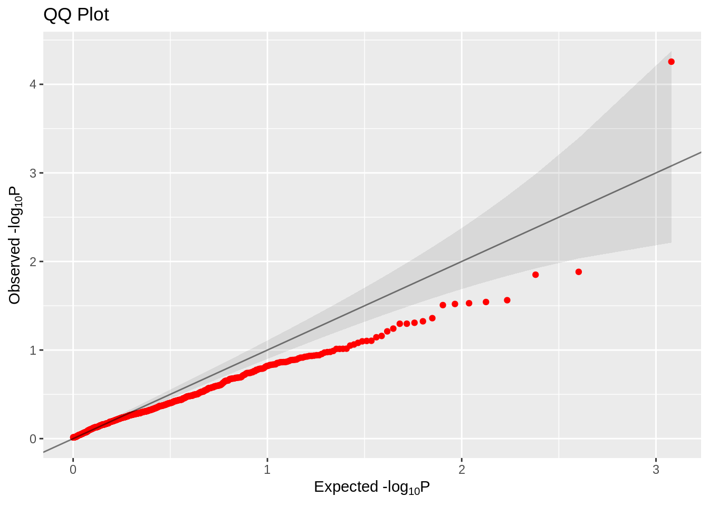
QQ Plot of NT grna pval estimated from 2000 null statistics with skew t approximation（normalized rank-based t test）
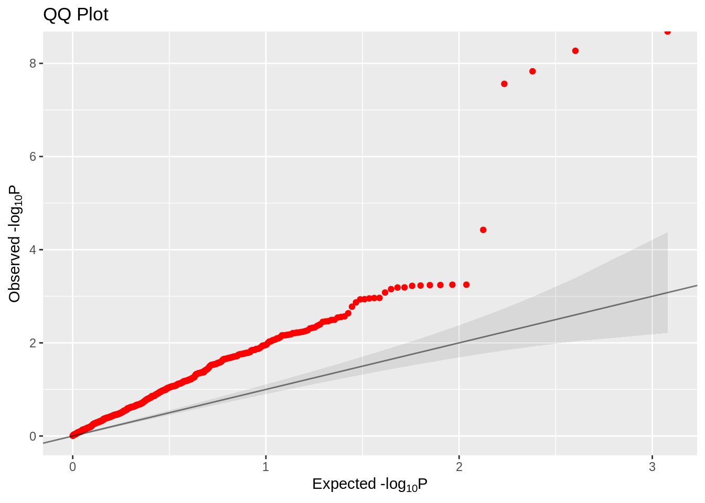
QQ Plot of NT grna pval estimated from 2000 null statistics with skew t approximation（log transformed t test）
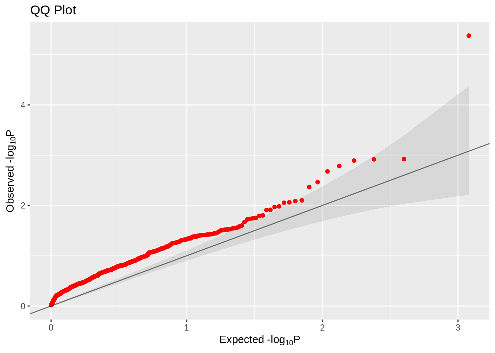
QQ Plot of NT grna pval estimated from 2000 null statistics with skew t approximation（rank-based t test）

QQ Plot of NT grna pval estimated from 2000 null statistics using Wilcox test
gg_qqplot(p_wilcox_p_2000_negative)
1.1.2 Power check (using known cis-effect grna only)
Power of NT grna pval estimated from 10000 null statistics with no approximation
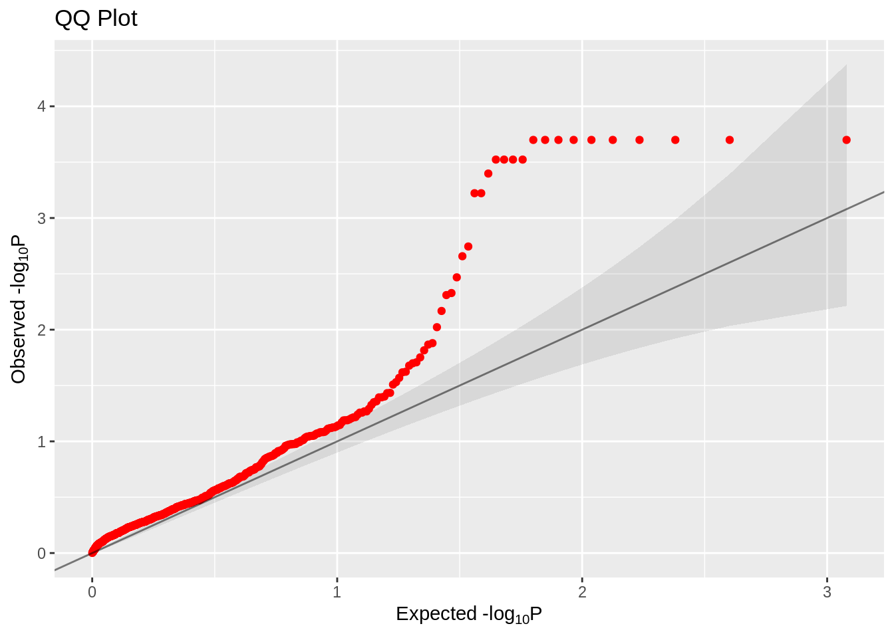
Power of NT grna pval estimated from 2000 null statistics with skew t approximation
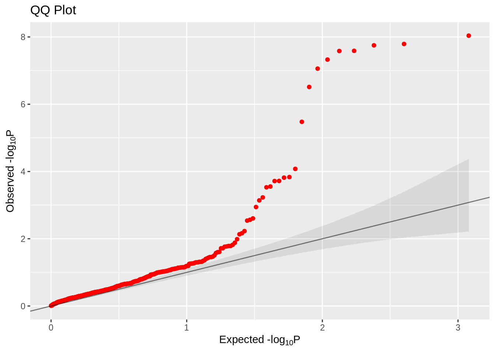
Power of NT grna pval estimated from 2000 null statistics with skew t approximation (include trans-effect SNPs)

Power of NT grna pval estimated from 2000 null statistics with skew t approximation（normalized rank-based t test）
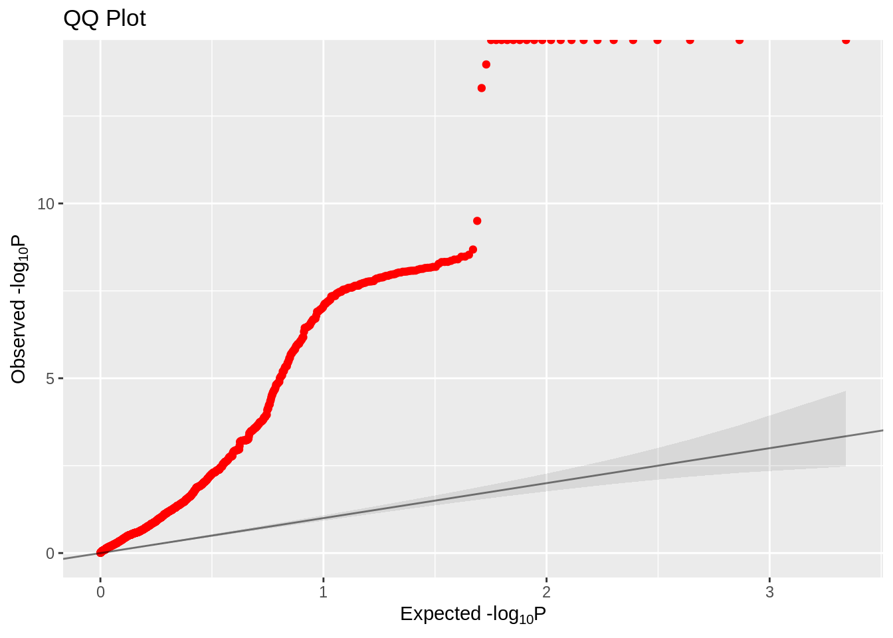
Power of NT grna pval estimated from 2000 null statistics with skew t approximation（log transformed t test）
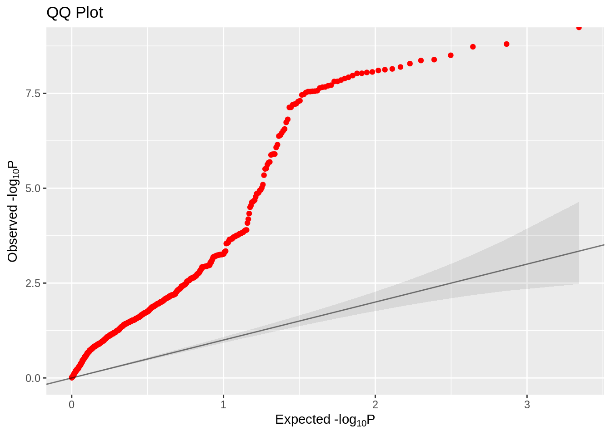
Power of NT grna pval estimated from 2000 null statistics with skew t approximation（rank-based t test）

gg_qqplot(p_wilcox_p_2000_positive)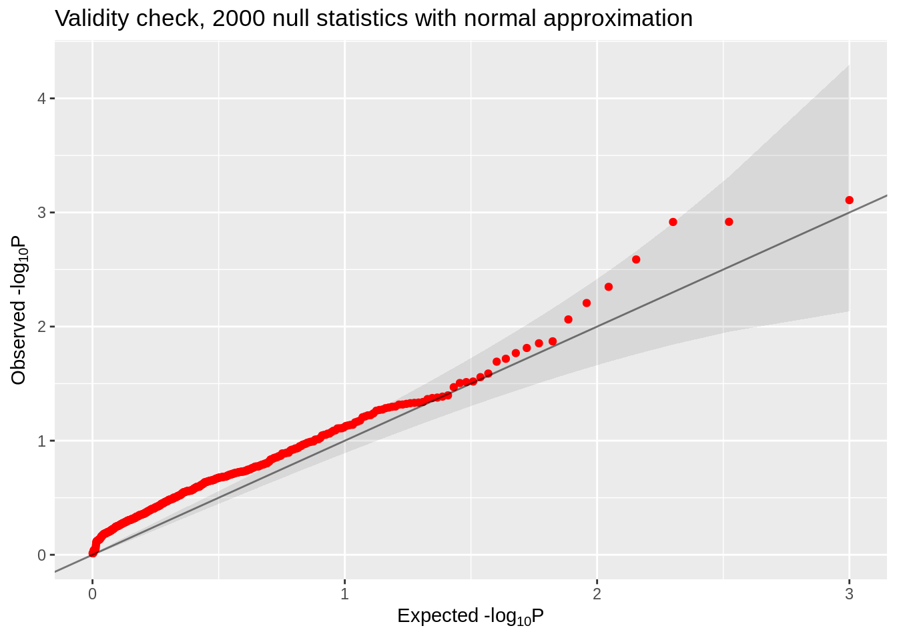
2 Our new model
Besides using power sum to combine gene-wise test statistics, I also consider the maximum test statistics as one of the combinations. The dataset we are using now is a
- Subset, (consider only genes within the module, and *such that the library size for each cell has changed)
- Filtered (removing analyzing genes that have low expression among all cells)
- Normalized (divide expression by the library size)
- Ranked (ranking the gene-expression level)
- Filtered (removing cells that have high/low library size) (optional)
2.1 Validity check
gg_qqplot(as.vector((as.matrix(read.csv("output/startover/approximation/our_method.csv",nrows = 208)[189:198,]))),title= "Validity check, 2000 null statistics with normal approximation")
gg_qqplot(as.vector((as.matrix(read.csv("output/startover/no_approximation/our_method.csv",nrows = 208)[189:198,-1]))),title= "Validity check, 10000 null statistics with no approximation")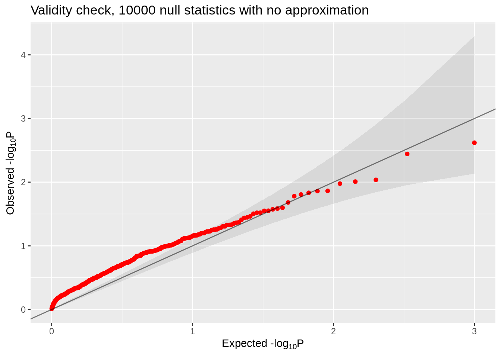
gg_qqplot(as.vector((as.matrix(read.csv("output/startover/no_approximation_20000/our_method.csv",nrows = 208)[189:198,]))),title= "Validity check, 20000 null statistics with no approximation")
I also tried other settings
gg_qqplot(as.vector(as.matrix(read.csv("output/startover/not_normalized_not_rank/our_method.csv")[23:32,])),title="10000 null statistics, not normalized not rank")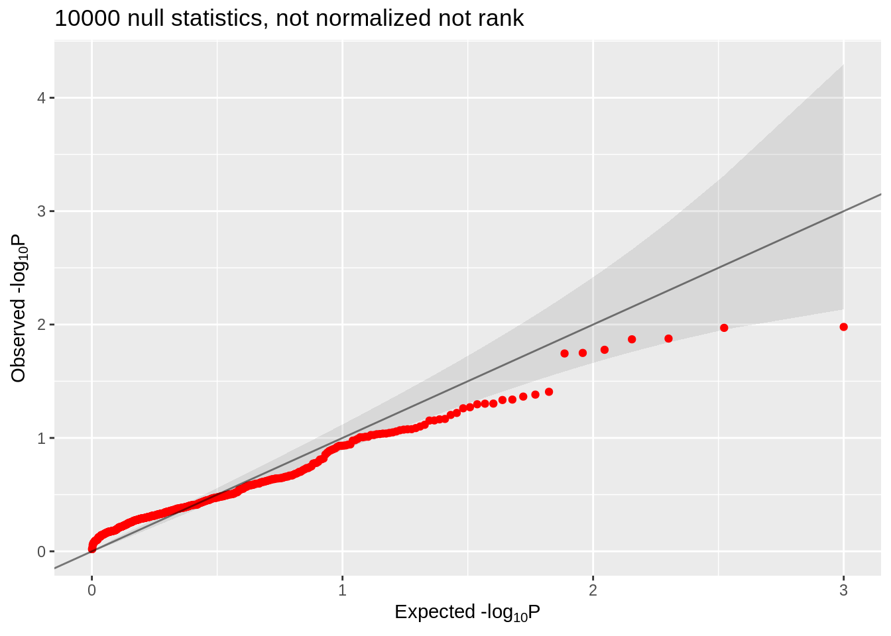
gg_qqplot(as.vector(as.matrix(read.csv("output/startover/not_normalized_rank/our_method.csv")[23:32,])),title="10000 null statistics, not normalized but rank")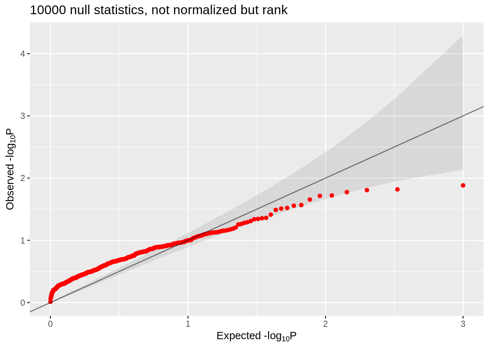
All plots shows a relatively good validity.
2.2 Power check
This includes perturbations on known trans-effective (rs12784232, rs35531439, rs524137, rs73660574, rs79755767) and cis-effective SNPs.
gg_qqplot(as.vector((as.matrix(read.csv("output/startover/approximation/our_method.csv",nrows = 208)[c(87,88,117,118,125,126,151,152,165,166,177:188),]))),title= "Power check, 2000 null statistics with skew normal approximation")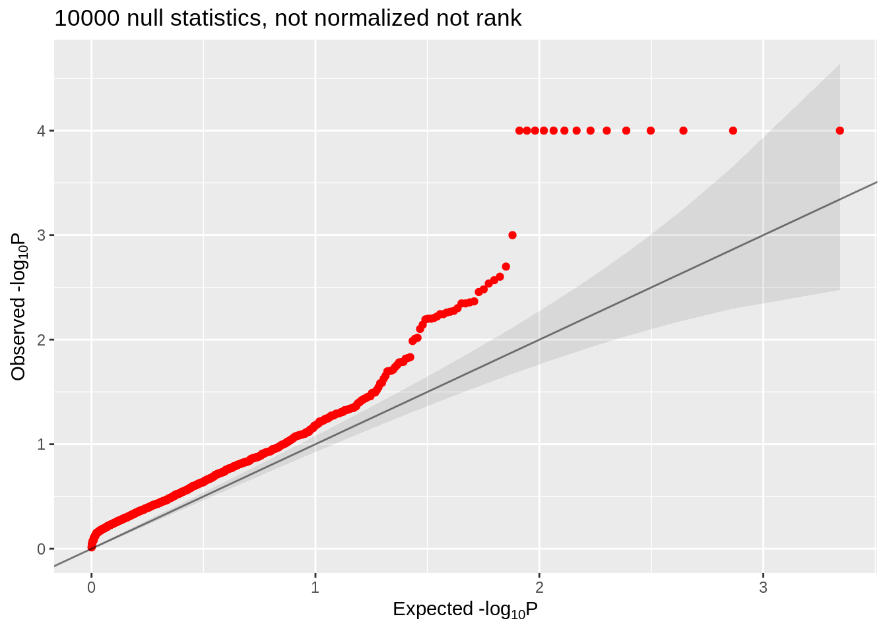
gg_qqplot(as.vector((as.matrix(read.csv("output/startover/no_approximation/our_method.csv",nrows = 208)[c(87,88,117,118,125,126,151,152,165,166,177:188),-1]))),title= "Power check, 10000 null statistics with no approximation")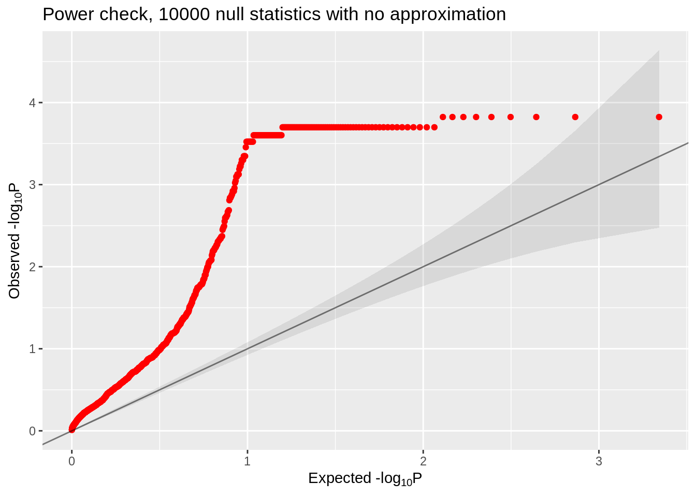
gg_qqplot(as.vector((as.matrix(read.csv("output/startover/no_approximation_20000/our_method.csv",nrows = 208)[c(87,88,117,118,125,126,151,152,165,166,177:188),]))),title= "Power check, 20000 null statistics with no approximation")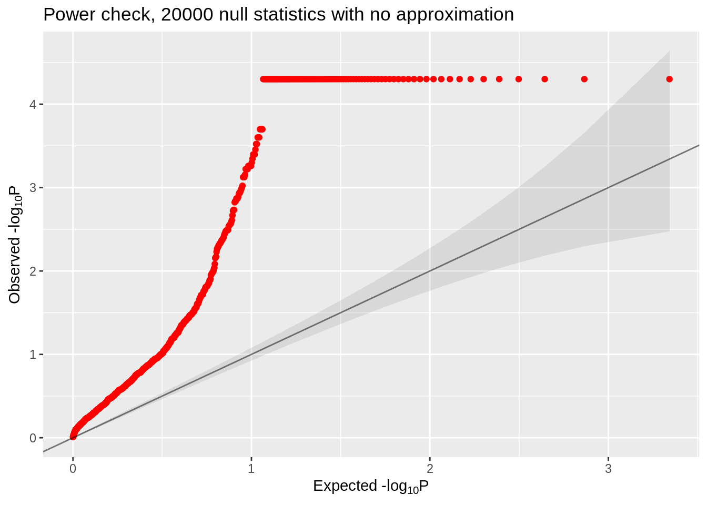
| Version | Author | Date |
|---|---|---|
| 41ecfc5 | jliucx | 2024-12-12 |
1. Skew normal approximation has the lowest power
2. Power can be further increased if we include number of permutation
I also tried other settings
gg_qqplot(as.vector(as.matrix(read.csv("output/startover/not_normalized_not_rank/our_method.csv")[-(23:32),])),title="10000 null statistics, not normalized not rank")
gg_qqplot(as.vector(as.matrix(read.csv("output/startover/not_normalized_rank/our_method.csv")[-(23:32),])),title="10000 null statistics, not normalized but rank")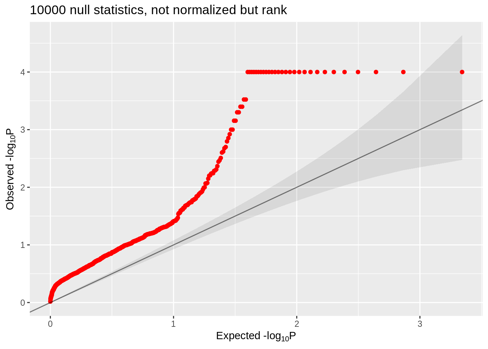
| Version | Author | Date |
|---|---|---|
| 41ecfc5 | jliucx | 2024-12-12 |
2.3 Plots comparing pval from no approximation and skew t approximation
Because the skew t approximation is very slow. Here the plot only contain positive control & negative control grnas. * Notice: I use directly p values to fit skew t curve.
p_10000 <- c(p_t_10000_negative, p_t_10000_positive)
p_skn_2000 <- c(p_t_2000_skn_negative, p_t_2000_skn_positive)
# Scatter plot of bind_10000 against bind_2000
plot(p_10000, p_skn_2000,
xlab = "p values of 10000 null statistics with no approximation",
ylab = "p values of 2000 null statistics with skewed t",
main = "Skew t approximation (2000 null statistics)",
pch = 16, # pch = 16 gives solid circles
cex = 0.6, # cex < 1 reduces the size of the points,
col = "red"
)
2.4 Plots comparing pval from no approximation and skew normal approximation after quantile transformation
Fitting skew normal is fast. Here the plot contains the p values from all perturbations. Notice, before fitting skew normal, I applied quantile transform of p values, such that \(\Phi^{-1}(p)\in R\), and then fit skew normal.
v1<-as.vector(as.matrix( read.csv("output/startover/approximation/our_method.csv",nrows = 208)))
v2<-as.vector(as.matrix( read.csv("output/startover/no_approximation/our_method.csv"))[,-1])
plot(v1, v2,
xlab = "p values of 10000 null statistics with no approximation",
ylab = "p values of 2000 null statistics with skewed normal",
main = "Skew normal approximation (2000 null statistics)",
pch = 16, # pch = 16 gives solid circles
cex = 0.6, # cex < 1 reduces the size of the points,
col = "red"
)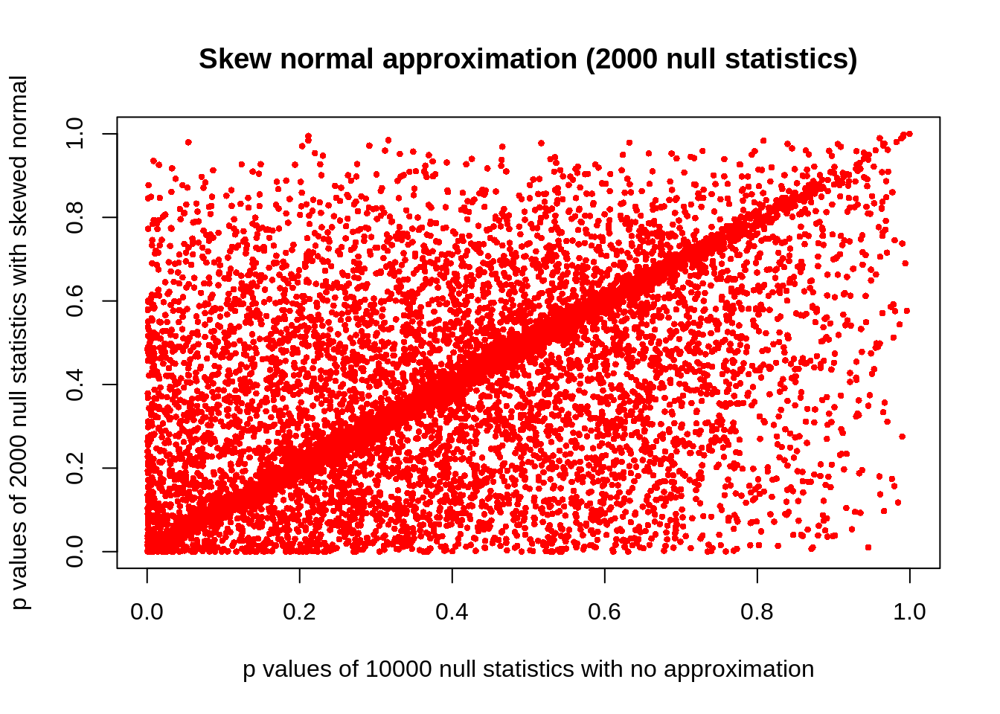
2.5 Plots comparing pval from 10000 null statistics and 20000 null statistics
plot(as.vector((as.matrix(read.csv("output/startover/test/our_method.csv",nrows = 208)[,-1]))),
as.vector((as.matrix(read.csv("output/startover/no_approximation_20000/our_method.csv",nrows = 208)))),
xlab = "p values of 10000 null statistics with no approximation",
ylab = "p values of 20000 null statistics ",
main = "Pval from 10000 null statistics and 20000 null statistics",
pch = 16, # pch = 16 gives solid circles
cex = 0.6, # cex < 1 reduces the size of the points,
col = "red"
)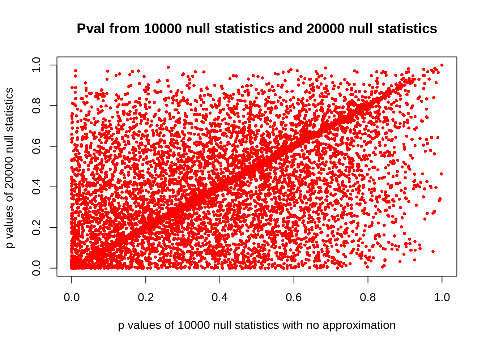
| Version | Author | Date |
|---|---|---|
| 41ecfc5 | jliucx | 2024-12-12 |
2.6 Conditional resampling
estimate_propensity <- function (grna_assignment_matrix, covariate) {
estimated_prop <- matrix(NA, nrow = nrow(grna_assignment_matrix), ncol = ncol(grna_assignment_matrix))
# Loop through each row of the grna_assignment_matrix
for (i in 1:nrow(grna_assignment_matrix)) {
# Extract the current row from the grna_assignment_matrix
grna_row <- as.numeric(grna_assignment_matrix[i, ])
# Fit logistic regression model using covariates and the current row
glm_fit <- glm(grna_row ~ ., family = binomial(link = "logit"), data = covariate)
# Predict the fitted means (estimated probabilities) for this row
estimated_prop[i, ] <- predict(glm_fit, type = "response")
}
return(estimated_prop)
}
resample_and_combine<- function(grna_assignment_matrix, n_permute) {
propensity_matrix <- estimate_propensity(grna_assignment_matrix , covariate)
propensity <- do.call(rbind, replicate(n_permute, propensity_matrix, simplify = FALSE))
resampled_mat <- matrix(rbinom(n = length(propensity),
size = 1,
prob = as.vector(propensity)),
nrow = nrow(propensity),
ncol = ncol(propensity))
rownames(resampled_mat) <- rep(rownames(grna_assignment_matrix),n_permute)
combined_mat <- rbind(grna_assignment_matrix, resampled_mat)
return(combined_mat)
}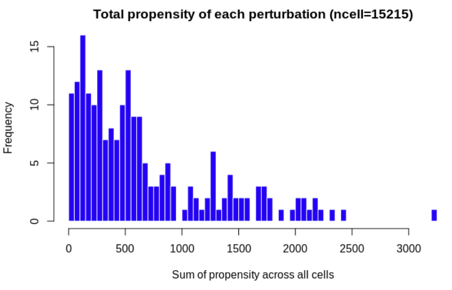
| Version | Author | Date |
|---|---|---|
| c60d966 | jliucx | 2024-12-09 |
3 Test on gene p value
library(tidyr)
Attaching package: 'tidyr'The following objects are masked from 'package:Matrix':
expand, pack, unpackgene_modules <- readRDS("data/gene_modules_id.rds")
gene_wise_p <- read.csv("output/startover/test/gene_wise_p.csv")
gene_wise_p[gene_wise_p == 0] <- 1 / 10000
gene_wise_p[gene_wise_p == 1] <- 1- 1/10000
rownames(gene_wise_p) <- gene_wise_p$X
sceptre <- rbind(readRDS("/project/xuanyao/jiaming/Getting_started/output/both_trans_author_threshold_0.05_2/results_run_discovery_analysis.rds")[,c(1,2,7)],
readRDS("/project/xuanyao/jiaming/Getting_started/output/both_trans_author_threshold_0.05_2/results_run_calibration_check.rds")[,c(1,2,7)])
sceptre$p_value[sceptre$p_value == 1] <- 1 - 1e-15
sceptre <- sceptre[!is.na(sceptre$p_value), ]
sceptre_wide <- sceptre %>%
pivot_wider(names_from = response_id, values_from = p_value) %>%
as.data.frame()
# Set the row names to be the grna_id and remove the grna_id column
rownames(sceptre_wide) <- sceptre_wide$grna_id
sceptre_wide <- sceptre_wide[, -1]
sceptre_wide <- sceptre_wide[rownames(gene_wise_p)[rownames(gene_wise_p) %in% rownames(sceptre_wide)], ]
# Reorder columns of sceptre_wide to match gene_wise_p
sceptre_wide <- sceptre_wide[, colnames(gene_wise_p)[-1], drop = FALSE]3.1 Scatter plots to compare gene wise P values of sceptre glm and our t test
# Define indices
indices <- c(10, 20,120, 130)
par(mfrow = c(2, 2))
# Loop through indices for scatter and QQ plots
for (index in indices) {
# Extract vectors for the current index
vector1 <- as.vector(as.matrix(gene_wise_p[index, -1]))
vector2 <- as.vector(as.matrix(sceptre_wide[index, ]))
# Filter out NA values
valid_indices <- !is.na(vector1) & !is.na(vector2)
filtered_vector1 <- vector1[valid_indices]
filtered_vector2 <- vector2[valid_indices]
# Scatter Plot
plot(
filtered_vector1, filtered_vector2,
xlab = "Gene Wise P Values",
ylab = "Sceptre Wide P Values",
main = paste0("Scatter Plot for ", index, " th perturbation"),
pch = 16,
col = "blue",
cex = 0.7
)
# Pause again before moving to the next index
# readline(prompt = "Press [Enter] to move to the next index...")
}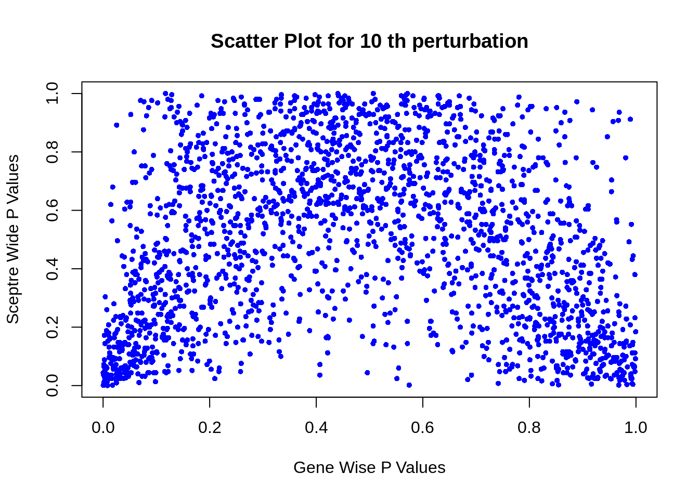
par(mfrow = c(1, 1))When calculating gene wise P values, we take absolute value of the test statistics and then take right-tail probability, however, the null distribution of test statistics is not symmetric around 0. It is right skewed and most of the test statistics are positive. Hence it lose power to detect negative statistics when taking absolute values
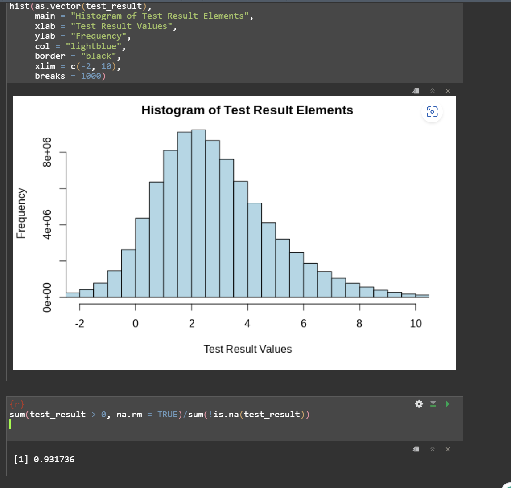
| Version | Author | Date |
|---|---|---|
| c60d966 | jliucx | 2024-12-09 |
3.2 Detailed examination
SNP5_2 - ENSG00000140464
paste0("sceptres p value: ", sceptre_wide[10,j], "; our p value: ", gene_wise_p[10, j+1])[1] "sceptres p value: 0.048; our p value: 0.998000199980002"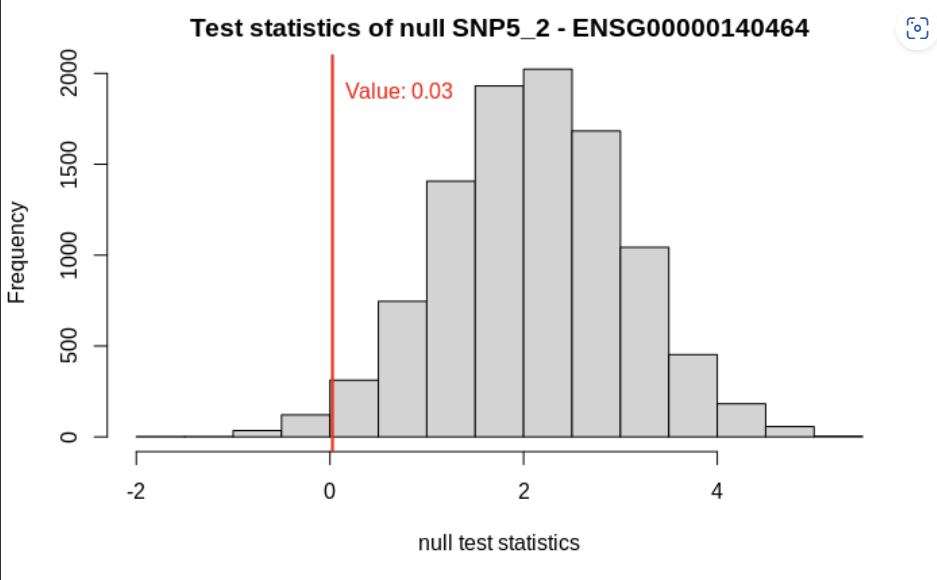
| Version | Author | Date |
|---|---|---|
| c990dd7 | jliucx | 2024-12-11 |
SNP10_2 - ENSG00000164237
paste0("sceptres p value: ", sceptre_wide[20,j[1]], "; our p value: ", gene_wise_p[20, j[1]+1])[1] "sceptres p value: 0.028; our p value: 0.997500249975003"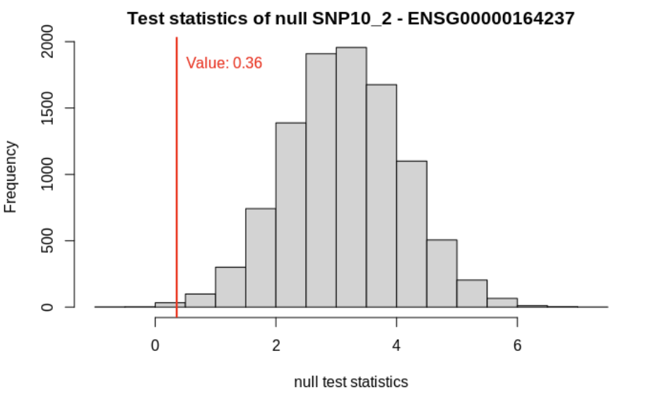
| Version | Author | Date |
|---|---|---|
| c990dd7 | jliucx | 2024-12-11 |
SNP10_2 - ENSG00000152942
paste0("sceptres p value: ", sceptre_wide[20,j[2]], "; our p value: ", gene_wise_p[20, j[2]+1])[1] "sceptres p value: 0.00238274863238185; our p value: 0.998700129987001"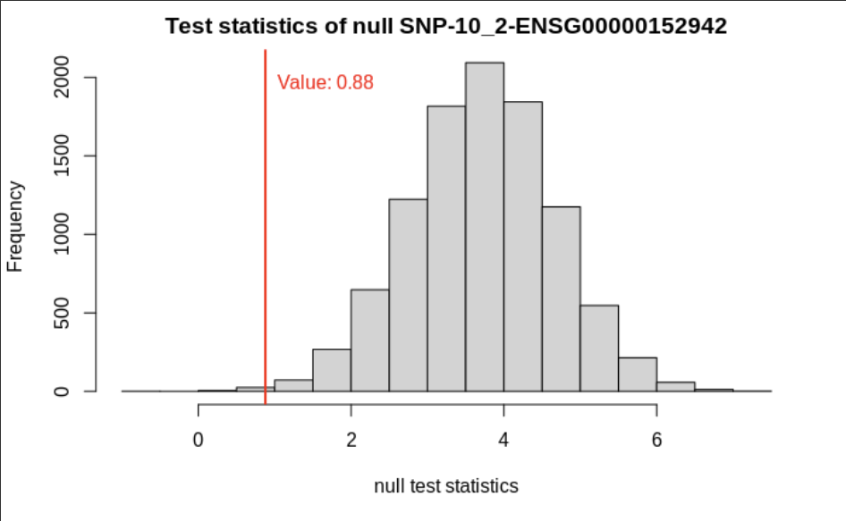
| Version | Author | Date |
|---|---|---|
| c990dd7 | jliucx | 2024-12-11 |
3.3 Fixing it by normalizing the null statistics before finding p values:
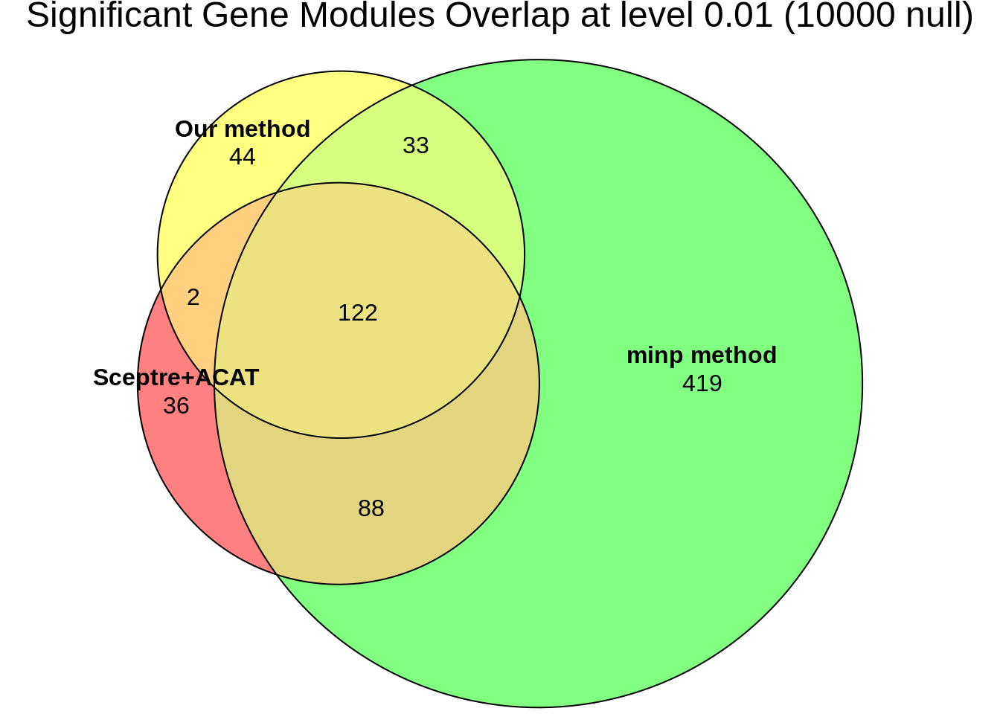
3.4 Biased histogram of test statistics
Select Non-targeting gRNA:
3.4.1 Check the null distribution of the test statistics for each gene and see if the
test statistics are always non-centered.
par(mfrow = c(3, 3))
for (i in 1:9){
value <- gene_wise_test_tensor[1, i, 1]
# Plot the histogram
hist(gene_wise_test_tensor[, i,1], main = paste0("Test statistics of " ,dimnames(gene_wise_test_tensor)[[3]][1], "-", dimnames(gene_wise_test_tensor)[[2]][i]), xlab="null test statistics")
# Add a vertical line to indicate the value
abline(v = value, col = "red", lwd = 2)
# Optionally, add a label for the value
text(value, par("usr")[4] * 0.9, paste("Value:", round(value, 2)), col = "red", pos = 4)
}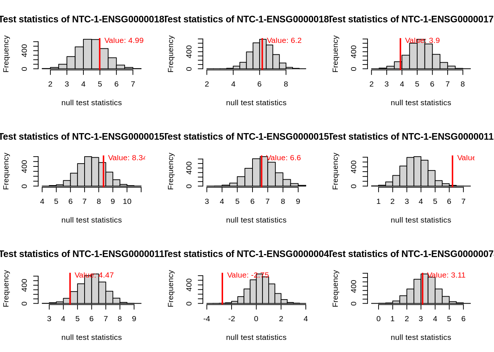
par(mfrow = c(1, 1))3.4.2 Check if the library size distribution is balanced between
treated and control before and after propensity score weighting.
Before propensity score weighting

propensity <- estimate_propensity(grna_assignment_matrix,covariate)After propensity score weighting

ranked_response<-round(response_matrix[1:6,])3.4.3 Compute the glm test statistics using the glm function in R
par(mfrow = c(3, 2))
for (k in gene_index){
grna_indices <- seq(1, by = 10, length.out = (n_permute+1))
subset_grna_assignment_matrix <- grna_assignment_matrix_combined[grna_indices, ]
coefficients_list <- vector("list", n_permute + 1)
# Loop through the permutations
for (i in 1:(n_permute + 1)) {
# Fit the GLM model
model <- glm(
ranked_response<-round(response_matrix[1:6,])[k, ] ~ subset_grna_assignment_matrix[i, ] + covariate$response_n_umis,
family = "poisson"
)
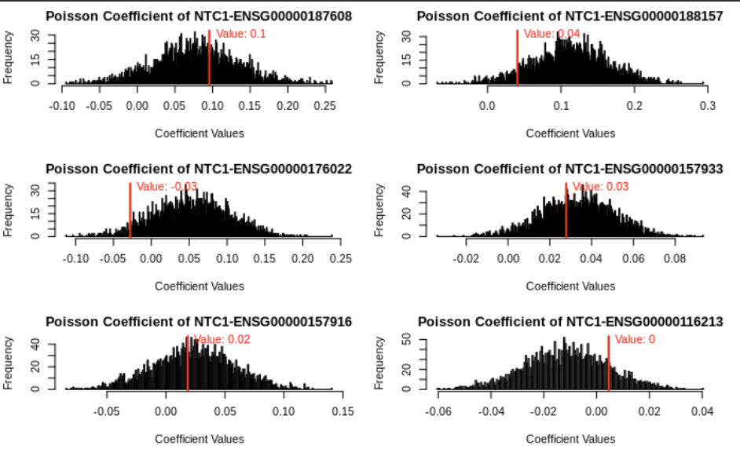
| Version | Author | Date |
|---|---|---|
| 36cda55 | jliucx | 2024-12-12 |
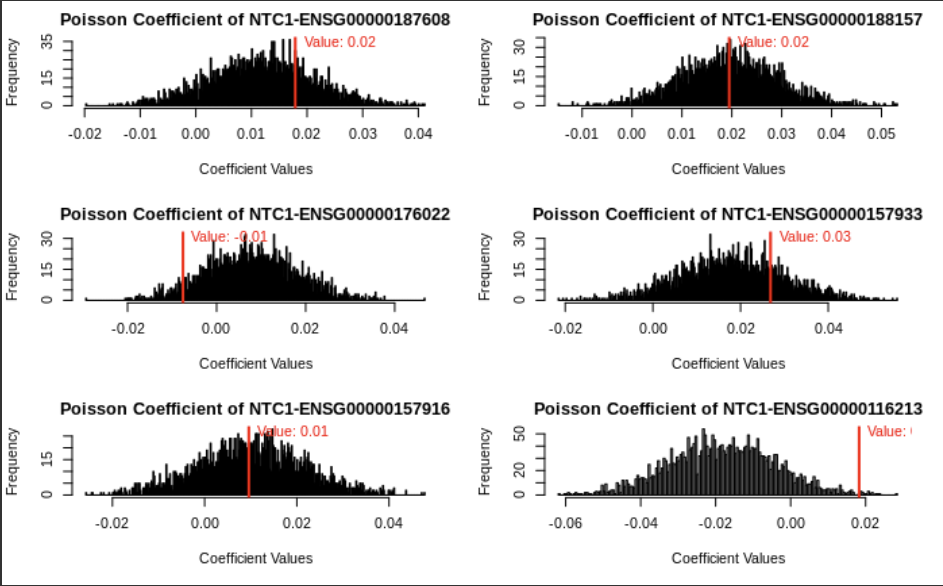
4 Compare gene module discoveries
4.1 Using ACAT to combine gene-wise p values (“External combination”)
4.1.1 ACAT of gene wise p from our method (i.e. t test)
library(ACAT)
module_results <- list()
# Iterate over each row of t_gene_p_no_approximation to compute ACAT p-values for each module
for (i in seq_len(nrow(gene_wise_p))) {
grna_id <- rownames(gene_wise_p)[i]
p_values_row <- gene_wise_p[i,] # Exclude grna_id column
# Initialize an empty list to store ACAT p-values and module names for each module
module_acat_pvals <- c()
module_names <- c()
# Iterate over each module in gene_modules to combine p-values using ACAT
for (j in seq_along(gene_modules)) {
module_name <- names(gene_modules)[j] # Get the module name
module_genes <- gene_modules[[j]][gene_modules[[j]] %in% colnames(p_values_row)]
# Only apply ACAT if there are genes to combine and they are not NA
if (length(module_genes) > 0) {
module_p_values <- as.numeric(p_values_row[module_genes])
module_p_values <- module_p_values[!is.na(module_p_values)] # Remove NAs
# Check if module_p_values still has values after removing NAs
if (length(module_p_values) > 0) {
acat_pval <- ACAT(module_p_values)
module_acat_pvals <- c(module_acat_pvals, acat_pval)
module_names <- c(module_names, module_name)
} else {
module_acat_pvals <- c(module_acat_pvals, NA)
module_names <- c(module_names, module_name)
}
} else {
module_acat_pvals <- c(module_acat_pvals, NA)
module_names <- c(module_names, module_name)
}
}
# Store results as a data frame in the list
module_results[[i]] <- data.frame(
grna_id = grna_id,
module = module_names,
acat_pval = module_acat_pvals
)
}
# Combine all results into a single data frame
module_results_t <- do.call(rbind, module_results)
module_results_t$bh_pval <- p.adjust(module_results_t$acat_pval, method = "BH")
module_results_t$identifier <- paste(module_results_t$grna_id, module_results_t$module, sep = "_")head(module_results_t) grna_id module acat_pval bh_pval
1 SNP-1_1 HALLMARK_TNFA_SIGNALING_VIA_NFKB 0.51914491 0.9322264
2 SNP-1_1 HALLMARK_HYPOXIA 0.62724531 0.9766941
3 SNP-1_1 HALLMARK_G2M_CHECKPOINT 0.30389703 0.7667471
4 SNP-1_1 HALLMARK_ADIPOGENESIS 0.04876272 0.3405858
5 SNP-1_1 HALLMARK_ESTROGEN_RESPONSE_EARLY 0.10709308 0.4885522
6 SNP-1_1 HALLMARK_ESTROGEN_RESPONSE_LATE 0.41331653 0.8610532
identifier
1 SNP-1_1_HALLMARK_TNFA_SIGNALING_VIA_NFKB
2 SNP-1_1_HALLMARK_HYPOXIA
3 SNP-1_1_HALLMARK_G2M_CHECKPOINT
4 SNP-1_1_HALLMARK_ADIPOGENESIS
5 SNP-1_1_HALLMARK_ESTROGEN_RESPONSE_EARLY
6 SNP-1_1_HALLMARK_ESTROGEN_RESPONSE_LATE4.1.2 ACAT of gene wise p from sceptre glm
module_results <- list()
# Iterate over each row of t_gene_p_no_approximation to compute ACAT p-values for each module
for (i in seq_len(nrow(sceptre_wide))) {
grna_id <- rownames(sceptre_wide)[i]
p_values_row <- sceptre_wide[i,] # Exclude grna_id column
# Initialize an empty list to store ACAT p-values and module names for each module
module_acat_pvals <- c()
module_names <- c()
# Iterate over each module in gene_modules to combine p-values using ACAT
for (j in seq_along(gene_modules)) {
module_name <- names(gene_modules)[j] # Get the module name
module_genes <- gene_modules[[j]][gene_modules[[j]] %in% colnames(p_values_row)]
# Only apply ACAT if there are genes to combine and they are not NA
if (length(module_genes) > 0) {
module_p_values <- as.numeric(p_values_row[module_genes])
module_p_values <- module_p_values[!is.na(module_p_values)] # Remove NAs
# Check if module_p_values still has values after removing NAs
if (length(module_p_values) > 0) {
acat_pval <- ACAT(module_p_values)
module_acat_pvals <- c(module_acat_pvals, acat_pval)
module_names <- c(module_names, module_name)
} else {
module_acat_pvals <- c(module_acat_pvals, NA)
module_names <- c(module_names, module_name)
}
} else {
module_acat_pvals <- c(module_acat_pvals, NA)
module_names <- c(module_names, module_name)
}
}
# Store results as a data frame in the list
module_results[[i]] <- data.frame(
grna_id = grna_id,
module = module_names,
acat_pval = module_acat_pvals
)
}
# Combine all results into a single data frame
module_results_sceptre <- do.call(rbind, module_results)
module_results_sceptre$bh_pval <- p.adjust(module_results_sceptre$acat_pval, method = "BH")
module_results_sceptre$identifier <- paste(module_results_sceptre$grna_id, module_results_sceptre$module, sep = "_")head(module_results_sceptre) grna_id module acat_pval bh_pval
1 SNP-62_2 HALLMARK_TNFA_SIGNALING_VIA_NFKB 2.771075e-33 7.521490e-31
2 SNP-62_2 HALLMARK_HYPOXIA 4.859149e-30 1.049134e-27
3 SNP-62_2 HALLMARK_G2M_CHECKPOINT 3.586345e-44 1.892793e-41
4 SNP-62_2 HALLMARK_ADIPOGENESIS 6.268950e-123 2.977751e-119
5 SNP-62_2 HALLMARK_ESTROGEN_RESPONSE_EARLY 4.056555e-06 2.049855e-04
6 SNP-62_2 HALLMARK_ESTROGEN_RESPONSE_LATE 1.666650e-14 1.583318e-12
identifier
1 SNP-62_2_HALLMARK_TNFA_SIGNALING_VIA_NFKB
2 SNP-62_2_HALLMARK_HYPOXIA
3 SNP-62_2_HALLMARK_G2M_CHECKPOINT
4 SNP-62_2_HALLMARK_ADIPOGENESIS
5 SNP-62_2_HALLMARK_ESTROGEN_RESPONSE_EARLY
6 SNP-62_2_HALLMARK_ESTROGEN_RESPONSE_LATEThe ACAT of gene-wise p values from Sceptre glm and t test differ a lot. The pattern is different for different perturbation. This can be explained by the disparity of gene-wise p value in the previous session
4.2 Gene module p value by Internal combination
4.2.1 minp
This gene-module p value is obtained by : 1. Obtain gene-wise test statistics and their corresponding p value 2. Take minimum p value within a gene module, as the test statistics 3. Use null distribution to find final p value
library(tibble)
minp <- read.csv("output/startover/test/minp.csv")
minp_long <- minp %>%
rownames_to_column(var = "grna_id") %>% # Add row names as a column
pivot_longer(cols = -grna_id, names_to = "module", values_to = "p_value")
# Remove rows with NA p-values
minp_long <- minp_long %>% filter(!is.na(p_value))
# Apply global BH correction to all p-values
minp_long <- minp_long %>%
mutate(bh_pval = p.adjust(p_value, method = "BH"))
head(minp_long)# A tibble: 6 × 4
grna_id module p_value bh_pval
<chr> <chr> <dbl> <dbl>
1 SNP-1_1 HALLMARK_TNFA_SIGNALING_VIA_NFKB 0.495 0.750
2 SNP-1_1 HALLMARK_HYPOXIA 0.347 0.677
3 SNP-1_1 HALLMARK_G2M_CHECKPOINT 0.260 0.618
4 SNP-1_1 HALLMARK_ADIPOGENESIS 0.0376 0.257
5 SNP-1_1 HALLMARK_ESTROGEN_RESPONSE_EARLY 0.162 0.515
6 SNP-1_1 HALLMARK_ESTROGEN_RESPONSE_LATE 0.540 0.7714.2.2 our method
our_method <- read.csv("output/startover/test/our_method.csv",nrows = 208)
colnames(our_method)[1] <- "grna_id"
our_method_long <- our_method %>%
# rownames_to_column(var = "grna_id") %>% # Add row names as a column
pivot_longer(cols = -grna_id, names_to = "module", values_to = "p_value")
# Remove rows with NA p-values (if any)
our_method_long <- our_method_long %>% filter(!is.na(p_value))
# Apply global BH correction to all p-values
our_method_long <- our_method_long %>%
mutate(bh_pval = p.adjust(p_value, method = "BH"))
head(our_method_long)# A tibble: 6 × 4
grna_id module p_value bh_pval
<chr> <chr> <dbl> <dbl>
1 SNP-1_1 HALLMARK_TNFA_SIGNALING_VIA_NFKB 0.153 0.622
2 SNP-1_1 HALLMARK_HYPOXIA 0.171 0.635
3 SNP-1_1 HALLMARK_G2M_CHECKPOINT 0.0610 0.528
4 SNP-1_1 HALLMARK_ADIPOGENESIS 0.332 0.690
5 SNP-1_1 HALLMARK_ESTROGEN_RESPONSE_EARLY 0.235 0.661
6 SNP-1_1 HALLMARK_ESTROGEN_RESPONSE_LATE 0.742 0.8104.3 Comparison of Module p values (t-ACAT vs Sceptre-ACAT)
# Define indices
indices <- c(11, 21, 30, 120)
# Loop through indices
for (k in indices) {
# Scatter Plot
plot(
module_results_t$acat_pval[(50 * k + 1):(50 * k + 50)],
module_results_sceptre$acat_pval[(50 * k + 1):(50 * k + 50)],
xlab = "T-ACAT P-Value",
ylab = "Sceptre ACAT P-Value",
main = paste0("Scatter Plot for Module P-Values of ", k, "th perturbation"),
pch = 16, # Point style
col = "blue", # Point color
cex = 0.7, # Point size
xlim = c(0,1),
ylim = c(0,1)
)
# Pause to allow the user to view the scatter plot
# readline(prompt = "Press [Enter] to view the QQ plot...")
# QQ Plot
qqplot(
module_results_t$acat_pval[(50 * k + 1):(50 * k + 50)],
module_results_sceptre$acat_pval[(50 * k + 1):(50 * k + 50)],
xlab = "T-ACAT P-Value",
ylab = "Sceptre ACAT P-Value",
main = paste0("QQ Plot for Module P-Values of ", k, "th perturbation"),
pch = 16,
col = "blue",
cex = 0.7
)
abline(0, 1, col = "red", lwd = 2) # Add reference line
# Pause before moving to the next index
# readline(prompt = "Press [Enter] to move to the next index...")
}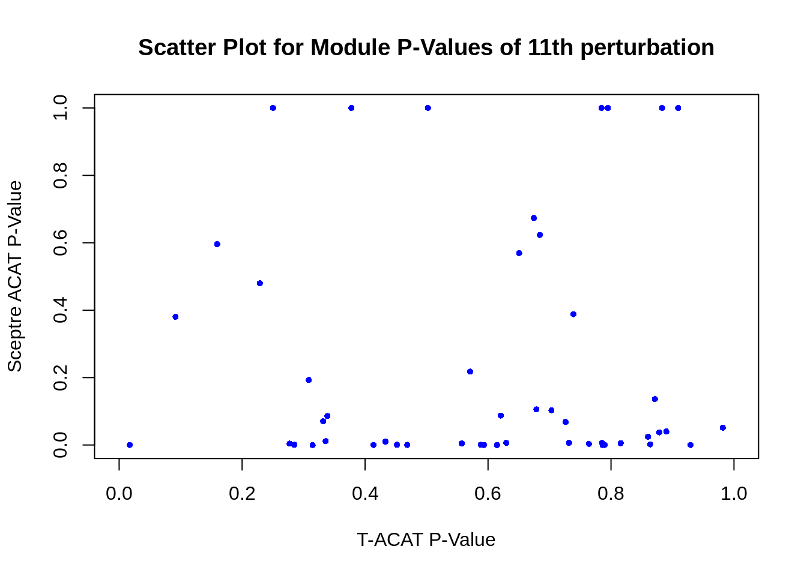
| Version | Author | Date |
|---|---|---|
| d2cb0b3 | jliucx | 2024-12-12 |
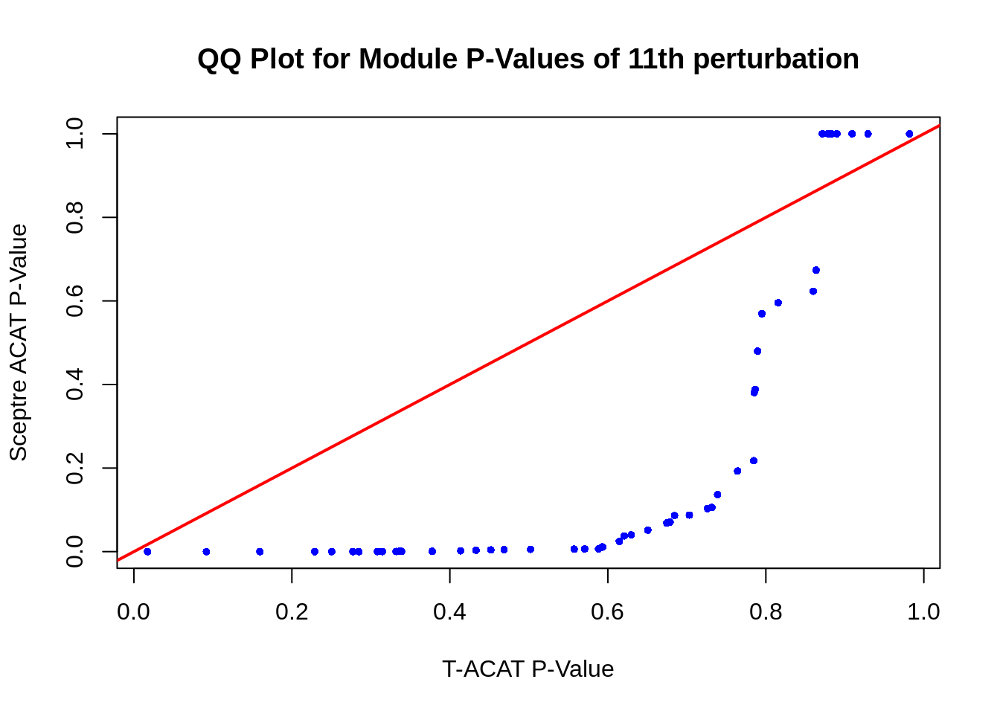
| Version | Author | Date |
|---|---|---|
| d2cb0b3 | jliucx | 2024-12-12 |
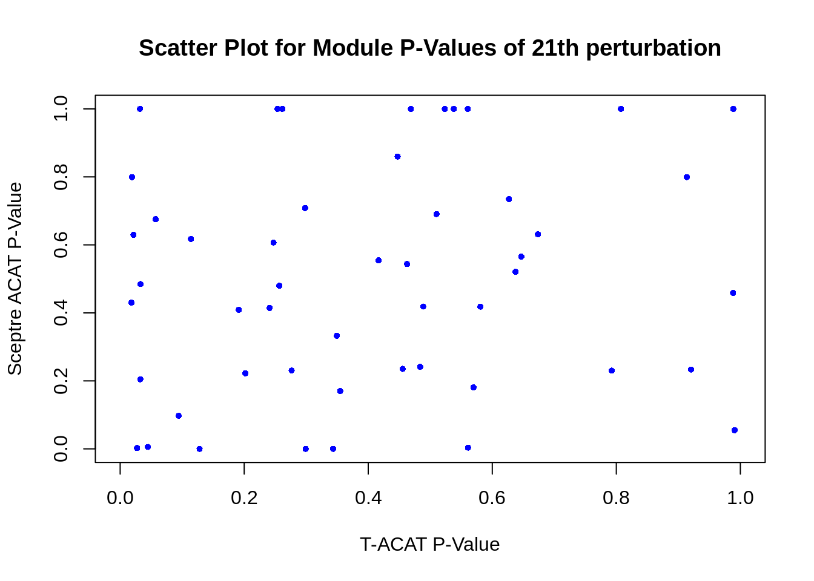
| Version | Author | Date |
|---|---|---|
| d2cb0b3 | jliucx | 2024-12-12 |
| Version | Author | Date |
|---|---|---|
| d2cb0b3 | jliucx | 2024-12-12 |
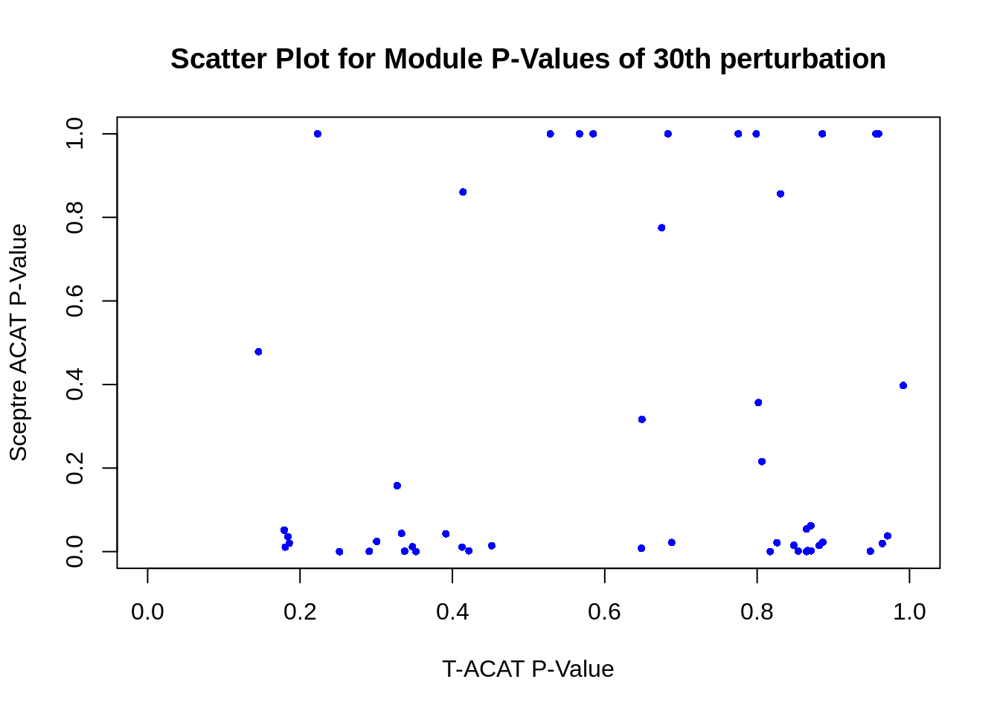
| Version | Author | Date |
|---|---|---|
| d2cb0b3 | jliucx | 2024-12-12 |
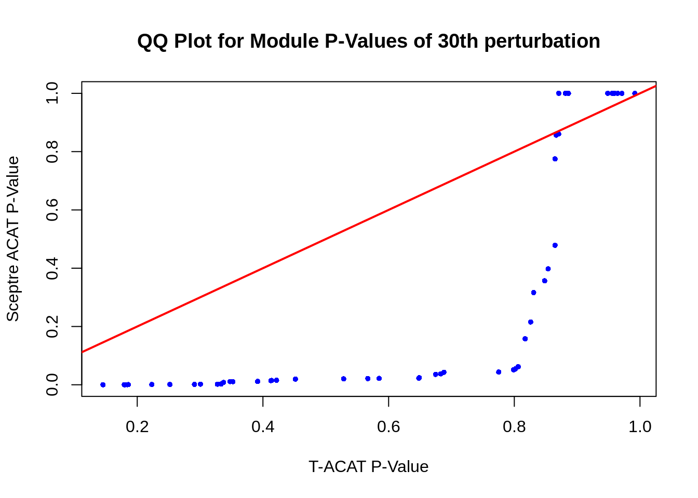
| Version | Author | Date |
|---|---|---|
| d2cb0b3 | jliucx | 2024-12-12 |
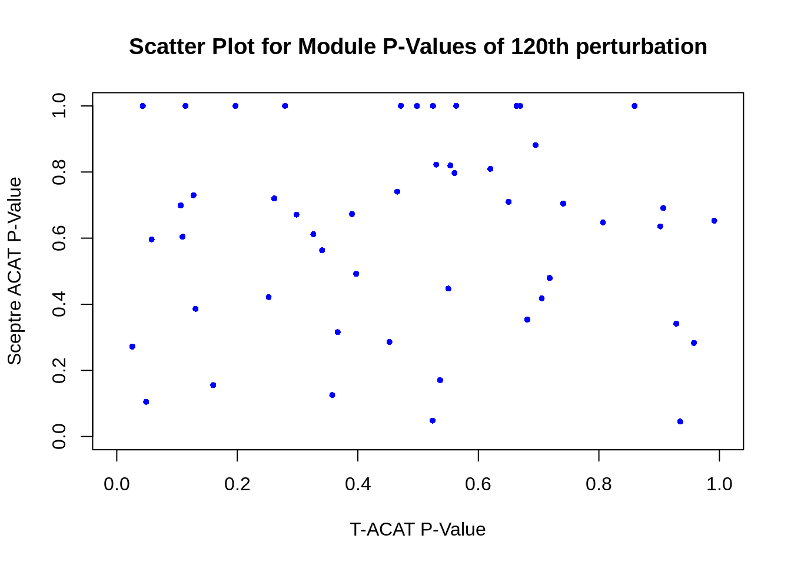
| Version | Author | Date |
|---|---|---|
| d2cb0b3 | jliucx | 2024-12-12 |
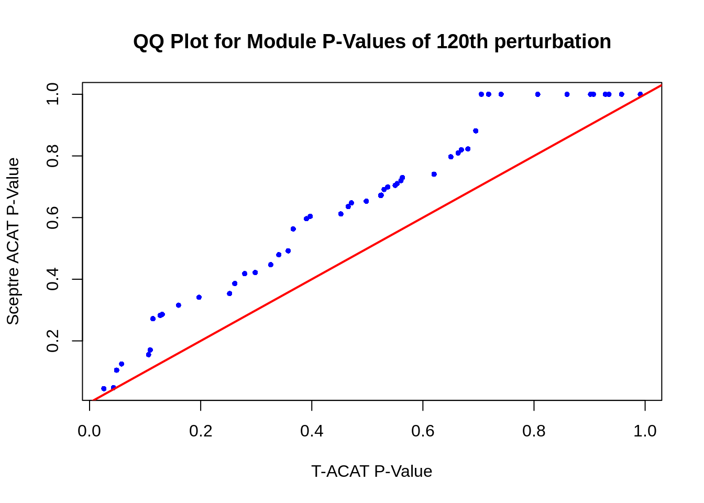
| Version | Author | Date |
|---|---|---|
| d2cb0b3 | jliucx | 2024-12-12 |
The ACAT of gene-wise p values from Sceptre glm and t test differ a lot. The pattern is different for different perturbation. This can be explained by the disparity of gene-wise p value in the previous session
4.4 Comparison of Module p values (minp vs our method)
We want to investigate in which case minp has a significance difference from us
indices <- c(11, 20, 30, 120)
# Loop through indices
for (k in indices) {
# Scatter Plot
plot(
our_method_long$p_value[(50 * k + 1):(50 * k + 50)],
minp_long$p_value[(50 * k + 1):(50 * k + 50)],
xlab = "Our P-Value",
ylab = "Minp P-Value",
main = paste0("Scatter Plot for Module P-Values of ", k, "th perturbation"),
pch = 16, # Point style
col = "blue", # Point color
cex = 0.7, # Point size
xlim = c(0,1),
ylim = c(0,1)
)
# Pause to allow the user to view the scatter plot
# readline(prompt = "Press [Enter] to view the QQ plot...")
# QQ Plot
qqplot(
our_method_long$p_value[(50 * k + 1):(50 * k + 50)],
minp_long$p_value[(50 * k + 1):(50 * k + 50)],
xlab = "Our P-Value",
ylab = "Minp P-Value",
main = paste0("QQ Plot for Module P-Values of ", k, "th perturbation"),
pch = 16,
col = "blue",
cex = 0.7
)
abline(0, 1, col = "red", lwd = 2) # Add reference line
# Pause before moving to the next index
# readline(prompt = "Press [Enter] to move to the next index...")
}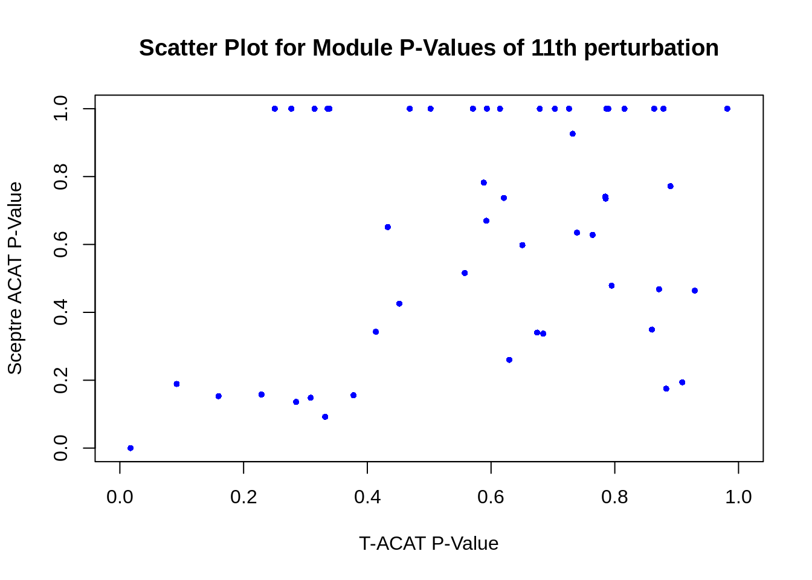
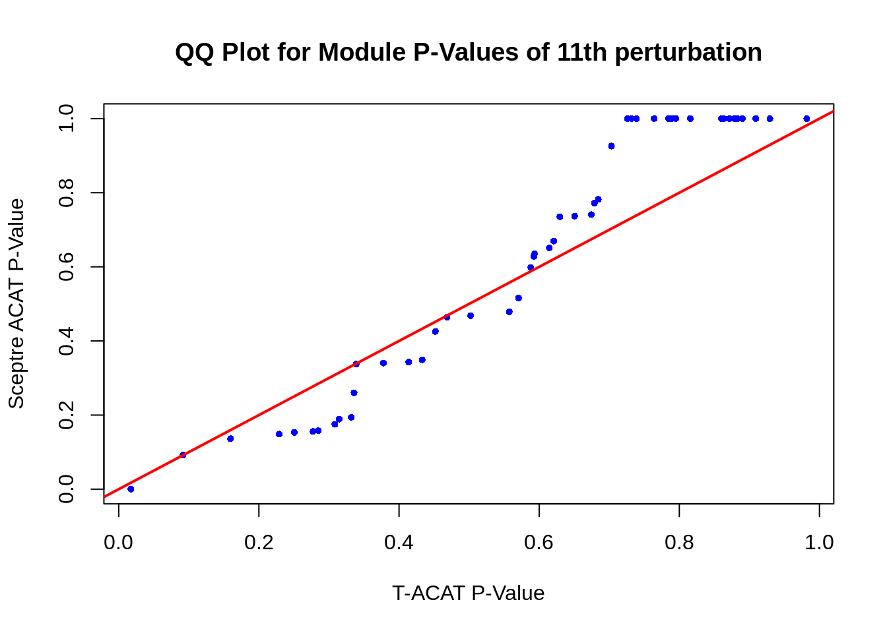


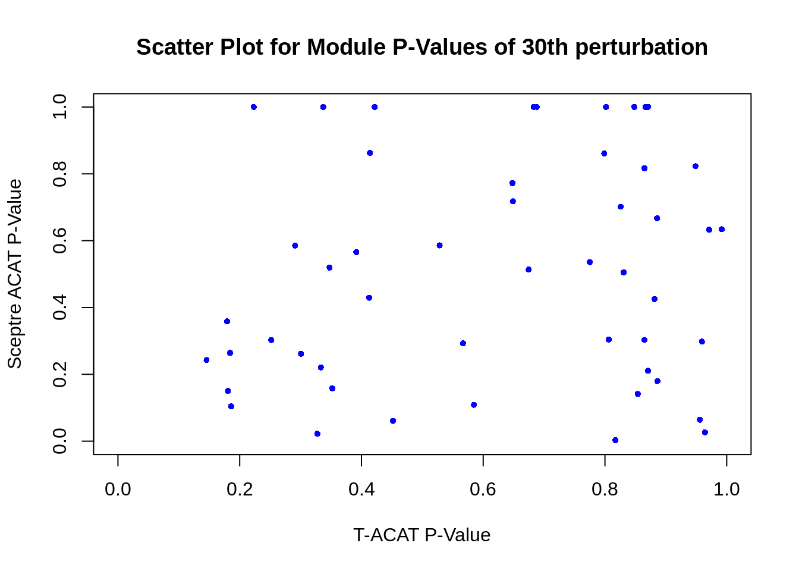
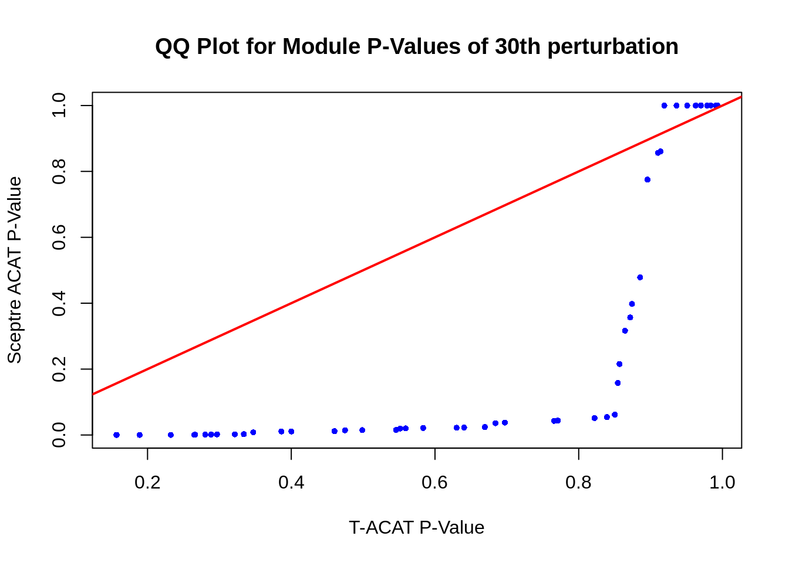


5 Comparison of discoveries of four methods
library(eulerr)
# Define significant levels
significant_levels <- c(0.01, 0.05, 0.1, 0.2, 0.25)
# Loop through significant levels and display plots
for (significant_level in significant_levels) {
# Filter significant IDs for each method
significant_ids_gene_wise_p <- module_results_sceptre$identifier[
module_results_sceptre$bh_pval < significant_level]
significant_ids_gene_wise_p_t <- module_results_t$identifier[
module_results_t$bh_pval < significant_level]
significant_pairs <- minp_long %>%
filter(bh_pval < significant_level) %>%
mutate(identifier = paste(grna_id, module, sep = "_"))
significant_identifiers_minp <- significant_pairs$identifier
significant_pairs_ours <- our_method_long %>%
filter(bh_pval < significant_level) %>%
mutate(identifier = paste(grna_id, module, sep = "_"))
significant_identifiers_ours <- significant_pairs_ours$identifier
# Prepare the sets
venn_data <- list(
`Sceptre+ACAT` = significant_ids_gene_wise_p,
`t+ACAT` = significant_ids_gene_wise_p_t,
`minp method` = significant_identifiers_minp,
`Our method` = significant_identifiers_ours
)
# Generate the Euler diagram and display it
euler_plot <- plot(euler(venn_data),
fills = list(fill = c("red", "blue", "green", "yellow"), alpha = 0.5),
edges = TRUE, quantities = TRUE,
main = paste("Significant Gene Modules Overlap at level", significant_level, "(10000 null)")
)
print(euler_plot) # Display the plot in the R plotting window
}Warning in colSums(id & !empty) == 0 | merged_sets: longer object length is not
a multiple of shorter object length
Warning in colSums(id & !empty) == 0 | merged_sets: longer object length is not
a multiple of shorter object length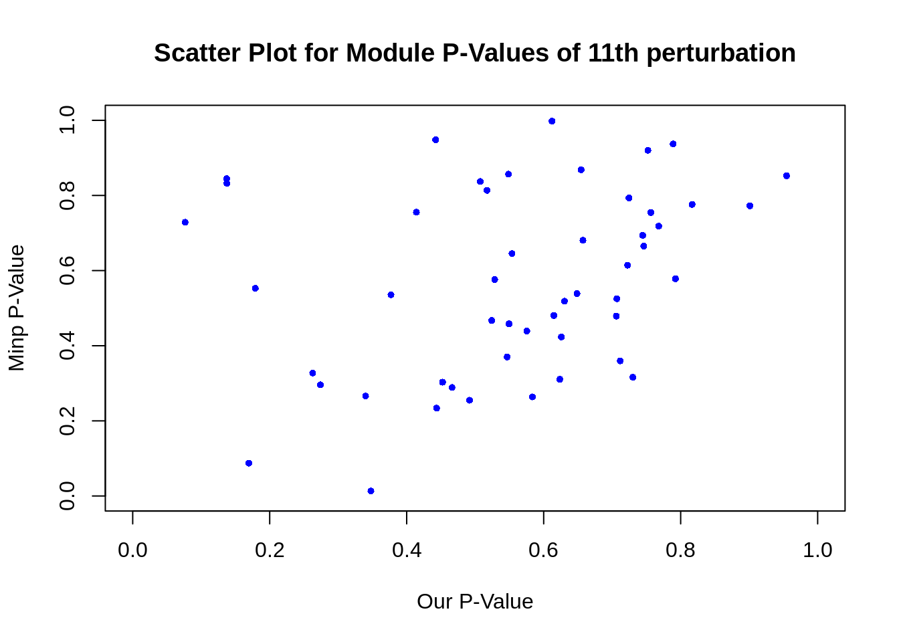
Warning in colSums(id & !empty) == 0 | merged_sets: longer object length is not
a multiple of shorter object length

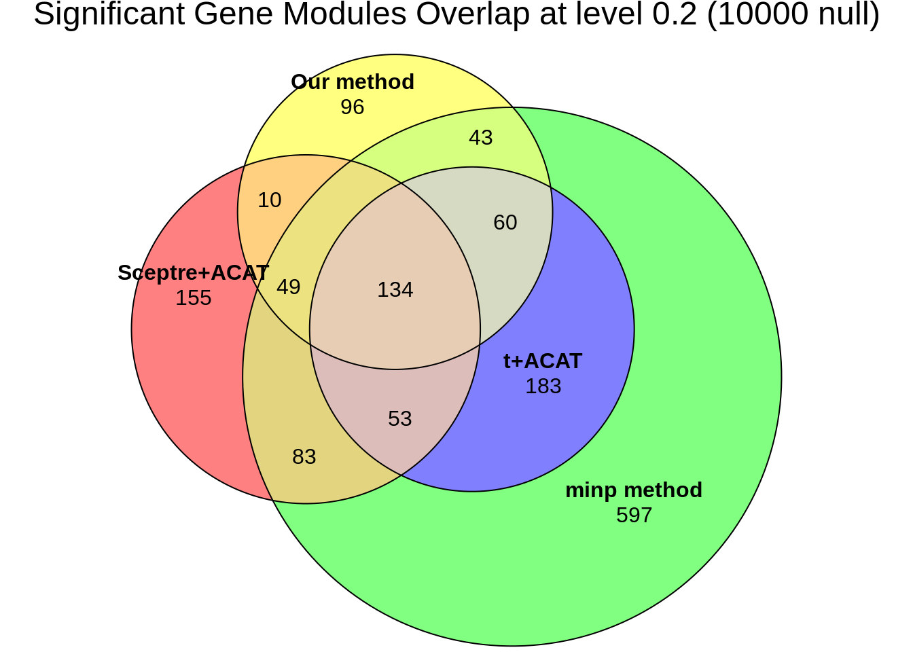
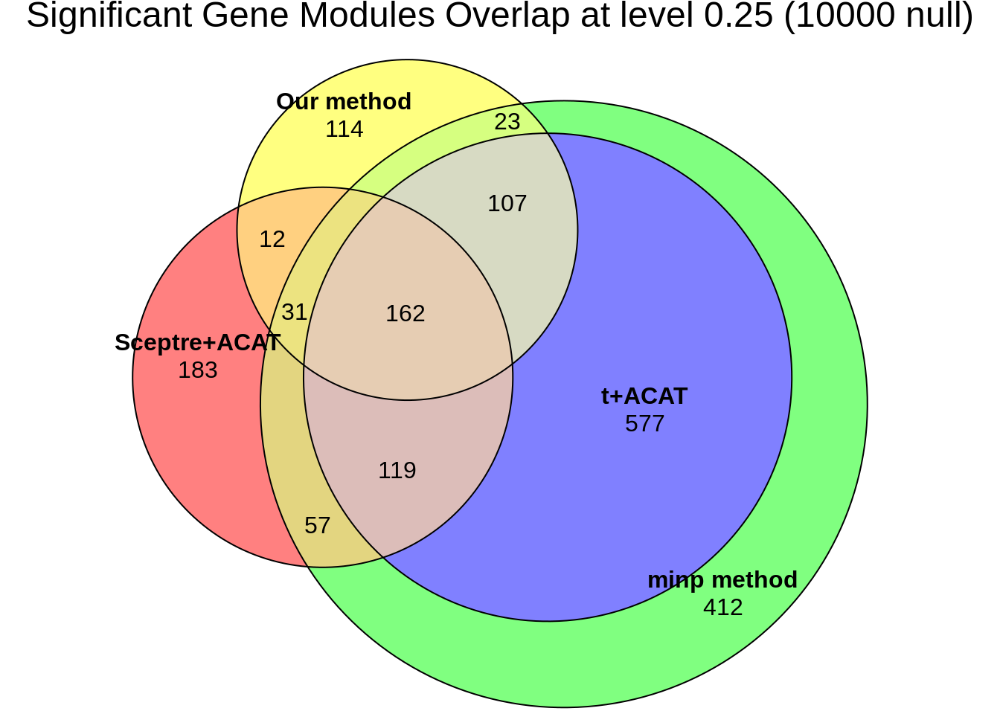
significant_levels <- c(0.01, 0.05, 0.1, 0.15, 0.2, 0.25)
# Loop through significant levels and display plots
for (significant_level in significant_levels) {
# Filter significant IDs for each method
significant_ids_gene_wise_p <- module_results_sceptre$identifier[
module_results_sceptre$bh_pval < significant_level]
significant_ids_gene_wise_p_t <- module_results_t$identifier[
module_results_t$bh_pval < significant_level]
significant_pairs <- minp_long %>%
filter(bh_pval < significant_level) %>%
mutate(identifier = paste(grna_id, module, sep = "_"))
significant_identifiers_minp <- significant_pairs$identifier
significant_pairs_ours <- our_method_long %>%
filter(bh_pval < significant_level) %>%
mutate(identifier = paste(grna_id, module, sep = "_"))
significant_identifiers_ours <- significant_pairs_ours$identifier
# Prepare the sets
venn_data <- list(
`Sceptre+ACAT` = significant_ids_gene_wise_p,
`t+ACAT` = significant_ids_gene_wise_p_t,
`minp method` = significant_identifiers_minp,
`Our method` = significant_identifiers_ours
)
# Generate the Euler diagram and display it
euler_plot <- plot(euler(venn_data),
fills = list(fill = c("red", "blue", "green", "yellow"), alpha = 0.5),
edges = TRUE, quantities = TRUE,
main = paste("Significant Gene Modules Overlap at level", significant_level, "(20000 null)")
)
print(euler_plot) # Display the plot in the R plotting window
}Warning in colSums(id & !empty) == 0 | merged_sets: longer object length is not
a multiple of shorter object length
Warning in colSums(id & !empty) == 0 | merged_sets: longer object length is not
a multiple of shorter object length
| Version | Author | Date |
|---|---|---|
| d2cb0b3 | jliucx | 2024-12-12 |
Warning in colSums(id & !empty) == 0 | merged_sets: longer object length is not
a multiple of shorter object length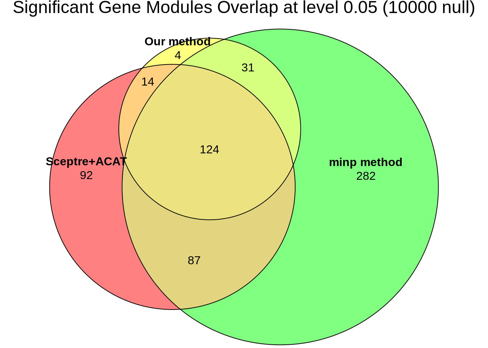
| Version | Author | Date |
|---|---|---|
| d2cb0b3 | jliucx | 2024-12-12 |
| Version | Author | Date |
|---|---|---|
| d2cb0b3 | jliucx | 2024-12-12 |
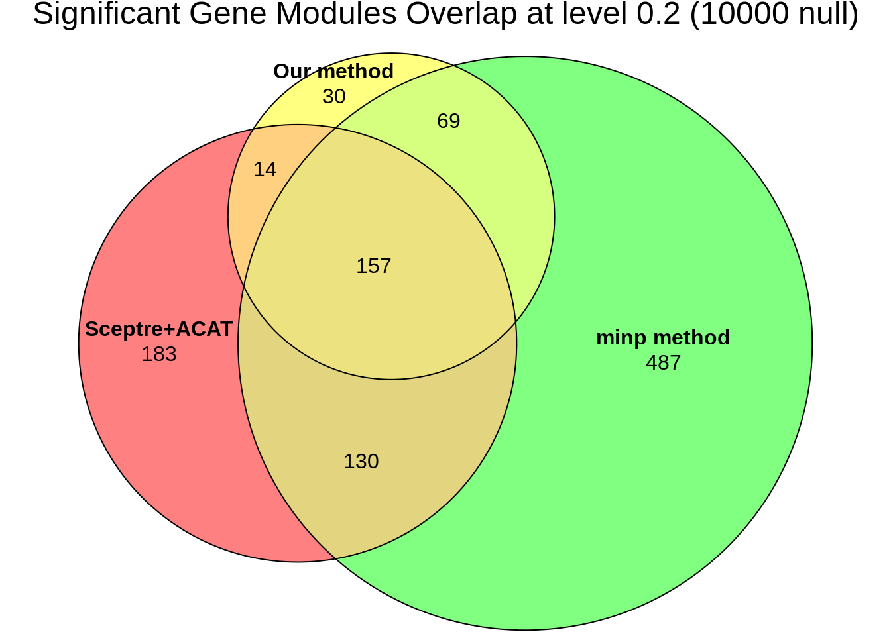
| Version | Author | Date |
|---|---|---|
| d2cb0b3 | jliucx | 2024-12-12 |
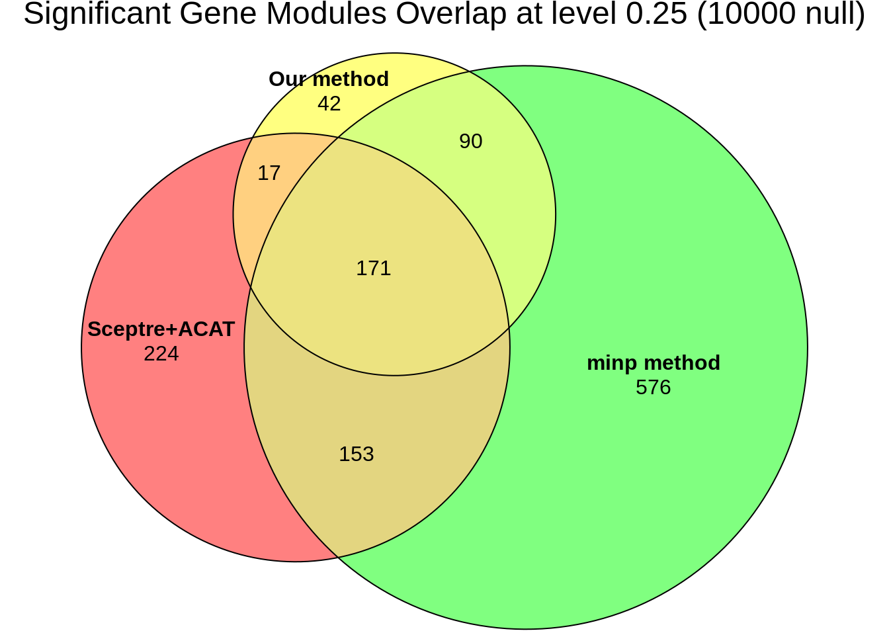
| Version | Author | Date |
|---|---|---|
| d2cb0b3 | jliucx | 2024-12-12 |
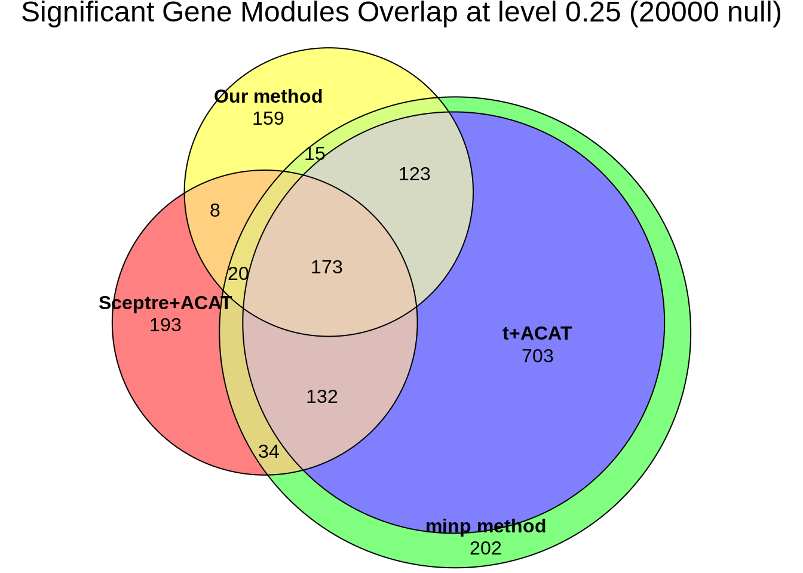
| Version | Author | Date |
|---|---|---|
| d2cb0b3 | jliucx | 2024-12-12 |
5.1 Validity check
ntc_our <- our_method_long %>%
filter(startsWith(grna_id, "NTC")) %>%
select(grna_id, p_value)
ntc_minp <- minp_long %>%
filter(startsWith(grna_id, "NTC")) %>%
select(grna_id, p_value)
ntc_t <- module_results_t %>%
filter(startsWith(grna_id, "NTC")) %>%
select(grna_id, acat_pval)
ntc_sceptre <- module_results_sceptre %>%
filter(startsWith(grna_id, "NTC")) %>%
select(grna_id, acat_pval)gg_qqplot(as.vector(ntc_our$p_value), title="Negative control our method")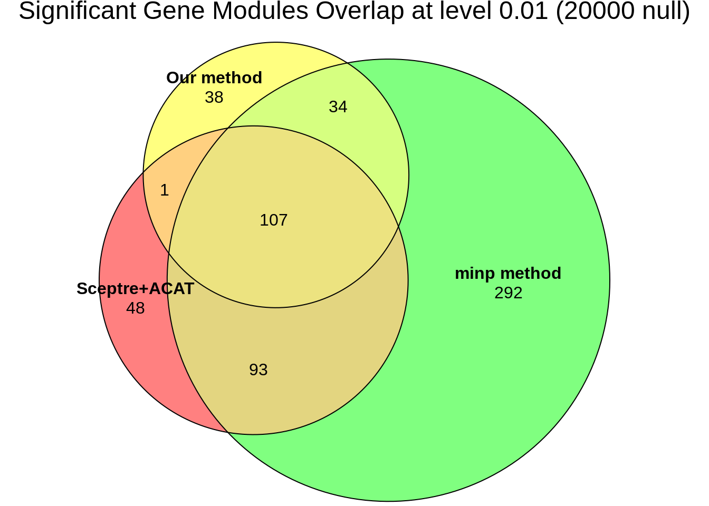
| Version | Author | Date |
|---|---|---|
| d2cb0b3 | jliucx | 2024-12-12 |
gg_qqplot(as.vector(ntc_minp$p_value), title="Negative control minp")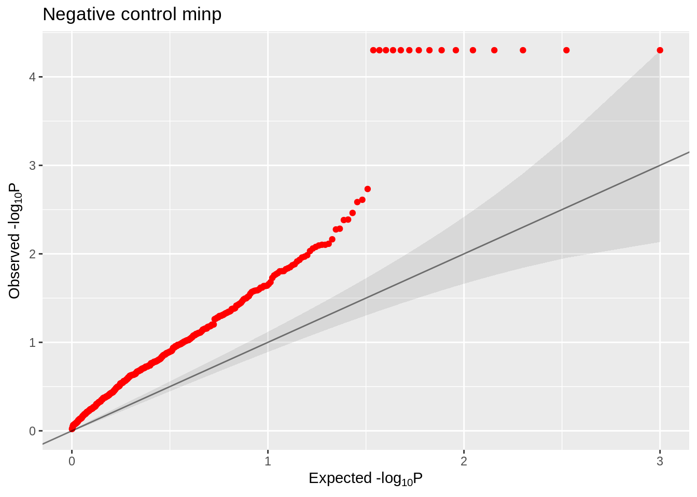
| Version | Author | Date |
|---|---|---|
| d2cb0b3 | jliucx | 2024-12-12 |
gg_qqplot(as.vector(ntc_t$acat_pval), title="Negative control t-ACAT")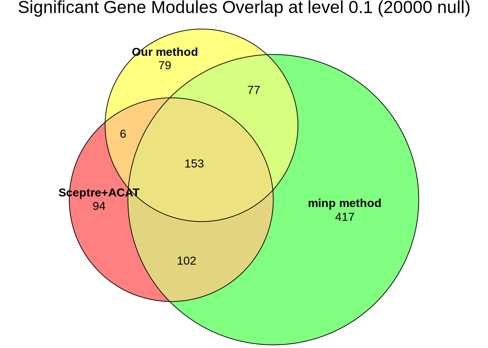
| Version | Author | Date |
|---|---|---|
| d2cb0b3 | jliucx | 2024-12-12 |
gg_qqplot(as.vector(ntc_sceptre$acat_pval), title="Negative control sceptre-ACAT")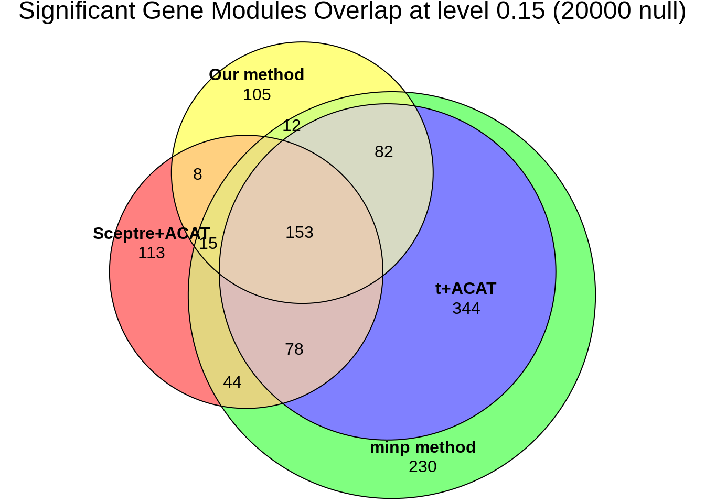
| Version | Author | Date |
|---|---|---|
| d2cb0b3 | jliucx | 2024-12-12 |
6 After solving Section 3.3
gene_modules <- readRDS("data/gene_modules_id.rds")
gene_wise_p <- read.csv("output/newest/try/gene_wise_p.csv", nrows = 208)
gene_wise_p[gene_wise_p == 0] <- 1 / 10000
gene_wise_p[gene_wise_p == 1] <- 1- 1/10000
sceptre <- rbind(readRDS("/project/xuanyao/jiaming/Getting_started/output/both_trans_author_threshold_0.05_2/results_run_discovery_analysis.rds")[,c(1,2,7)],
readRDS("/project/xuanyao/jiaming/Getting_started/output/both_trans_author_threshold_0.05_2/results_run_calibration_check.rds")[,c(1,2,7)])
sceptre$p_value[sceptre$p_value == 1] <- 1 - 1e-15
sceptre <- sceptre[!is.na(sceptre$p_value), ]
sceptre_wide <- sceptre %>%
pivot_wider(names_from = response_id, values_from = p_value) %>%
as.data.frame()
# Set the row names to be the grna_id and remove the grna_id column
rownames(sceptre_wide) <- sceptre_wide$grna_id
sceptre_wide <- sceptre_wide[, -1]
# Display the reformatted data frame
# rownames(gene_wise_p) <- gene_wise_p$X1
# Reorder rows of sceptre_wide to match gene_wise_p (subset rows by intersection)
sceptre_wide <- sceptre_wide[rownames(gene_wise_p)[rownames(gene_wise_p) %in% rownames(sceptre_wide)], ]
# Reorder columns of sceptre_wide to match gene_wise_p
sceptre_wide <- sceptre_wide[, colnames(gene_wise_p)[-1], drop = FALSE]
library(ACAT)
module_results <- list()
# Iterate over each row of t_gene_p_no_approximation to compute ACAT p-values for each module
for (i in seq_len(nrow(gene_wise_p))) {
grna_id <- rownames(gene_wise_p)[i]
p_values_row <- gene_wise_p[i,-1] # Exclude grna_id column
# Initialize an empty list to store ACAT p-values and module names for each module
module_acat_pvals <- c()
module_names <- c()
# Iterate over each module in gene_modules to combine p-values using ACAT
for (j in seq_along(gene_modules)) {
module_name <- names(gene_modules)[j] # Get the module name
module_genes <- gene_modules[[j]][gene_modules[[j]] %in% colnames(p_values_row)]
# Only apply ACAT if there are genes to combine and they are not NA
if (length(module_genes) > 0) {
module_p_values <- as.numeric(p_values_row[module_genes])
module_p_values <- module_p_values[!is.na(module_p_values)] # Remove NAs
# Check if module_p_values still has values after removing NAs
if (length(module_p_values) > 0) {
acat_pval <- ACAT(module_p_values)
module_acat_pvals <- c(module_acat_pvals, acat_pval)
module_names <- c(module_names, module_name)
} else {
module_acat_pvals <- c(module_acat_pvals, NA)
module_names <- c(module_names, module_name)
}
} else {
module_acat_pvals <- c(module_acat_pvals, NA)
module_names <- c(module_names, module_name)
}
}
# Store results as a data frame in the list
module_results[[i]] <- data.frame(
grna_id = grna_id,
module = module_names,
acat_pval = module_acat_pvals
)
}
# Combine all results into a single data frame
module_results_t <- do.call(rbind, module_results)
module_results_t$bh_pval <- p.adjust(module_results_t$acat_pval, method = "BH")
module_results_t$identifier <- paste(module_results_t$grna_id, module_results_t$module, sep = "_")library(tibble)
minp <- read.csv("output/newest/try/minp.csv")
minp_long <- minp%>%
rownames_to_column(var = "grna_id") %>% # Add row names as a column
pivot_longer(cols = -grna_id, names_to = "module", values_to = "p_value")
# Remove rows with NA p-values
minp_long <- minp_long %>% filter(!is.na(p_value))
# Apply global BH correction to all p-values
minp_long <- minp_long %>%
mutate(bh_pval = p.adjust(p_value, method = "BH"))
our_method <- read.csv("output/newest/try/our_method.csv")
our_method_long <- our_method %>%
rownames_to_column(var = "grna_id") %>% # Add row names as a column
pivot_longer(cols = -grna_id, names_to = "module", values_to = "p_value")
# Remove rows with NA p-values (if any)
our_method_long <- our_method_long %>% filter(!is.na(p_value))
# Apply global BH correction to all p-values
our_method_long <- our_method_long %>%
mutate(bh_pval = p.adjust(p_value, method = "BH"))library(eulerr)
significant_levels <- c(0.01, 0.05, 0.1, 0.15, 0.2, 0.25)
# Loop through significant levels and display plots
for (significant_level in significant_levels) {
# Filter significant IDs for each method
significant_ids_gene_wise_p <- module_results_sceptre$identifier[
module_results_sceptre$bh_pval < significant_level]
significant_ids_gene_wise_p_t <- module_results_t$identifier[
module_results_t$bh_pval < significant_level]
significant_pairs <- minp_long %>%
filter(bh_pval < significant_level) %>%
mutate(identifier = paste(grna_id, module, sep = "_"))
significant_identifiers_minp <- significant_pairs$identifier
significant_pairs_ours <- our_method_long %>%
filter(bh_pval < significant_level) %>%
mutate(identifier = paste(grna_id, module, sep = "_"))
significant_identifiers_ours <- significant_pairs_ours$identifier
# Prepare the sets
venn_data <- list(
`Sceptre+ACAT` = significant_ids_gene_wise_p,
`t+ACAT` = significant_ids_gene_wise_p_t,
`minp method` = significant_identifiers_minp,
`Our method` = significant_identifiers_ours
)
# Generate the Euler diagram and display it
euler_plot <- plot(euler(venn_data),
fills = list(fill = c("red", "blue", "green", "yellow"), alpha = 0.5),
edges = TRUE, quantities = TRUE,
main = paste("Significant Gene Modules Overlap at level", significant_level, "(20000 null)")
)
print(euler_plot) # Display the plot in the R plotting window
}Warning in colSums(id & !empty) == 0 | merged_sets: longer object length is not
a multiple of shorter object length
Warning in colSums(id & !empty) == 0 | merged_sets: longer object length is not
a multiple of shorter object length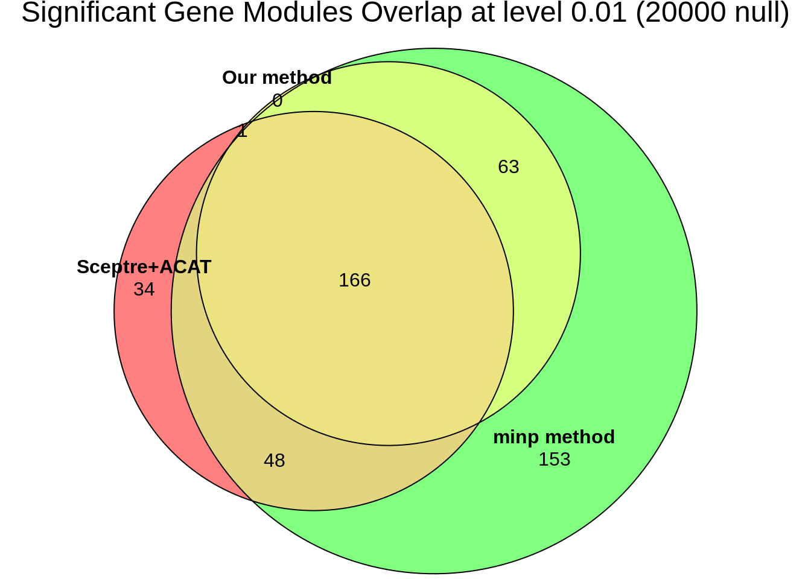
| Version | Author | Date |
|---|---|---|
| d2cb0b3 | jliucx | 2024-12-12 |
Warning in colSums(id & !empty) == 0 | merged_sets: longer object length is not
a multiple of shorter object length
| Version | Author | Date |
|---|---|---|
| d2cb0b3 | jliucx | 2024-12-12 |
Warning in colSums(id & !empty) == 0 | merged_sets: longer object length is not
a multiple of shorter object length
| Version | Author | Date |
|---|---|---|
| d2cb0b3 | jliucx | 2024-12-12 |
| Version | Author | Date |
|---|---|---|
| d2cb0b3 | jliucx | 2024-12-12 |
| Version | Author | Date |
|---|---|---|
| d2cb0b3 | jliucx | 2024-12-12 |
| Version | Author | Date |
|---|---|---|
| d2cb0b3 | jliucx | 2024-12-12 |
ntc_our <- our_method_long %>%
filter(startsWith(grna_id, "NTC")) %>%
select(grna_id, p_value)
ntc_minp <- minp_long %>%
filter(startsWith(grna_id, "NTC")) %>%
select(grna_id, p_value)
ntc_t <- module_results_t %>%
filter(startsWith(grna_id, "NTC")) %>%
select(grna_id, acat_pval)
ntc_sceptre <- module_results_sceptre %>%
filter(startsWith(grna_id, "NTC")) %>%
select(grna_id, acat_pval)
gg_qqplot(as.vector(ntc_our$p_value), title="Negative control our method")
gg_qqplot(as.vector(ntc_minp$p_value), title="Negative control minp")
gg_qqplot(as.vector(ntc_t$acat_pval), title="Negative control t-ACAT")
gg_qqplot(as.vector(ntc_sceptre$acat_pval), title="Negative control sceptre-ACAT")
sessionInfo()R version 4.1.0 (2021-05-18)
Platform: x86_64-pc-linux-gnu (64-bit)
Running under: CentOS Linux 8
Matrix products: default
BLAS/LAPACK: /software/openblas-0.2.19-el8-x86_64/lib/libopenblas_haswellp-r0.2.19.so
locale:
[1] LC_CTYPE=en_US.UTF-8 LC_NUMERIC=C LC_TIME=C
[4] LC_COLLATE=C LC_MONETARY=C LC_MESSAGES=C
[7] LC_PAPER=C LC_NAME=C LC_ADDRESS=C
[10] LC_TELEPHONE=C LC_MEASUREMENT=C LC_IDENTIFICATION=C
attached base packages:
[1] parallel stats graphics grDevices utils datasets methods
[8] base
other attached packages:
[1] eulerr_7.0.2 tibble_3.2.1 ACAT_0.91
[4] tidyr_1.3.0 ggplot2_3.5.1 sgt_2.0
[7] numDeriv_2016.8-1.1 optimx_2023-10.21 peakRAM_1.0.2
[10] BH_1.84.0-0 Matrix_1.6-3 dplyr_1.1.4
[13] readr_1.4.0 sceptredata_0.99.0 sceptre_0.10.0
[16] presto_1.0.0 data.table_1.14.8 Rcpp_1.0.12
[19] workflowr_1.7.1
loaded via a namespace (and not attached):
[1] lattice_0.22-5 getPass_0.2-2 ps_1.7.5 rprojroot_2.0.4
[5] digest_0.6.33 utf8_1.2.1 R6_2.5.1 evaluate_0.23
[9] pracma_2.4.4 httr_1.4.2 highr_0.11 pillar_1.9.0
[13] rlang_1.1.2 rstudioapi_0.15.0 whisker_0.4.1 callr_3.7.6
[17] jquerylib_0.1.4 nloptr_1.2.2.2 R.oo_1.24.0 R.utils_2.10.1
[21] rmarkdown_2.27 labeling_0.4.3 stringr_1.5.1 polyclip_1.10-6
[25] munsell_0.5.0 polylabelr_0.2.0 compiler_4.1.0 httpuv_1.6.1
[29] xfun_0.45 pkgconfig_2.0.3 htmltools_0.5.8.1 tidyselect_1.2.0
[33] fansi_1.0.5 withr_2.5.2 crayon_1.5.2 later_1.2.0
[37] R.methodsS3_1.8.2 grid_4.1.0 gtable_0.3.0 jsonlite_1.8.7
[41] lifecycle_1.0.4 git2r_0.32.0 magrittr_2.0.3 scales_1.3.0
[45] cli_3.6.1 stringi_1.6.2 cachem_1.0.8 farver_2.1.1
[49] fs_1.6.3 promises_1.2.0.1 bslib_0.7.0 ellipsis_0.3.2
[53] generics_0.1.3 vctrs_0.6.4 tools_4.1.0 glue_1.6.2
[57] purrr_1.0.2 hms_1.1.0 processx_3.8.4 fastmap_1.1.1
[61] yaml_2.2.1 colorspace_2.1-0 knitr_1.48 sass_0.4.9